|
Columbian Clematis (fruit) |
Clematis columbiana |
100 |
 |
0.473719 |
Columbia Clematis (Clematis columbiana) |
ca. 1900-1925 |
lower left in watercolor: Field |
|
Rosette Cinquefoil |
Potentilla nivea |
182 |
|
0.507957 |
Avalanche Buttercup (Ranunculus suksdorfii) |
1919 |
lower left in watercolor: M. V. W./Burgess Pass/7.17.1919. |
| 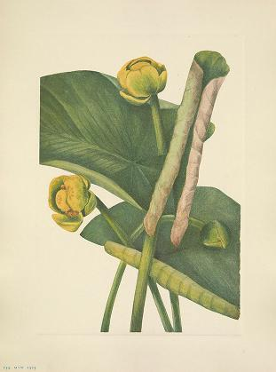 |
Spatterdock |
Nymphaea advena |
159 |
|
0.542181 |
Dutchman's Pipe |
1934 |
lower right in watercolor: M. V. W./Gatlinburg/6.15 '34 |
|
Franklinia |
Franklinia alatamaha |
244 |
|
0.571909 |
Virginia Stewartia (Stewartia malachodendron) |
1925 |
lower left in watercolor: M. V. W./5.8.1925\r\nback lower center in pencil: 333/Stuartia |
|
Trumpet Honeysuckle |
Lonicera sempervirens |
46 |
|
0.582944 |
California Fuschia (Zauschneria californica) |
1936 |
lower left in watercolor: Palo Alto/8-11-'36 |
|
Red-osier Dogwood |
Cornus stolonifera |
38 |
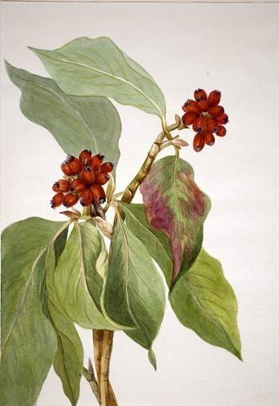 |
0.584515 |
Pacific Dogwood (Cornus nuttallii) |
1933 |
NaN |
 |
American Holly |
Ilex opaca |
266 |
|
0.592800 |
Yaupon (Ilex vomitoria) |
1926 |
lower left in watercolor: M. V. W/Beaufort/2 3.16.1926. |
|
Sagebrush Mariposa |
Calochortus macrocarpus |
175 |
|
0.605587 |
Sego Lily (Calochortus nuttallii) |
1933 |
lower left in watercolor: MVW/Grand Canyon/6.25.33 |
|
Redbud |
Cercis canadensis |
26 |
 |
0.623351 |
Chickasaw Plum (Prunus angustifolia) |
1920 |
lower left in watercolor: M. V. W./4.23.1920. |
|
Creeping Hollygrape |
Berberis repens |
30 |
|
0.632879 |
Western Mountain Ash (Sorbus sambucifolia) |
1918 |
lower right in watercolor: Vermilion Pass/9.15.1918. |
|
Roundleaf Orchis |
Orchis rotundifolia |
65 |
 |
0.644083 |
Roundleaf Orchis (Orchis rotundifolia) |
1924 |
lower right in watercolor: M. V. W./7.14.1924/Emerald Lake 3 |
 |
Rhodora |
Rhodora canadensis |
28 |
|
0.645642 |
Pinkshell Azalea (Azalea vaseyi) |
1925 |
lower left in watercolor: M. V. W./H (illegible).30.1925. |
|
Cardinalflower |
Lobelia cardinalis |
263 |
|
0.646814 |
(Untitled--Flower Study) |
1876 |
center in watercolor: MMV/Newport/9.25.1876 |
|
Turkscap Lily |
Lilium superbum |
256 |
|
0.672281 |
Glacierlily (Erythronium grandiflorum) |
1899 |
lower left in watercolor: M. M. V./Glacier/8/9 '99\r\nlower right in watercolor: Mt. Avalanche |
|
Mountain-laurel |
Kalmia latifolia |
221 |
|
0.677409 |
Lambkill (Kalmia angustifolia) |
1918 |
lower left in watercolor: Washington/5.16.1918. |
 |
Western Monkeyflower |
Mimulus guttatus |
313 |
|
0.691321 |
Lewis Monkey Flower (Mimulus lewisii) |
1899 |
lower right in watercolor: Glacier Trail/8/13 '99\r\nlower right in pencil: 374 (barely legible) |
|
Low Whortleberry |
Vaccinium caespitosum |
179 |
|
0.710271 |
Low Whortleberry (Vaccinium caespitosum) |
1918 |
lower right in watercolor: Bow Lake/7.25.1918 |
| 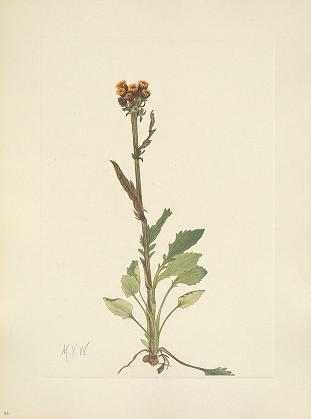 |
Rayless Groundsel |
Senecio spartioides |
93 |
|
0.715158 |
Rayless Groundsel (Senecio pauciflorus) |
1921 |
lower left in watercolor: M. V. W./Flower Camp/7.31.1921./7 |
|
Catalina Mariposa |
Calochortus catalinae Watson |
205 |
|
0.734042 |
Sego Lily (Calochortus nuttallii) |
1933 |
lower left in watercolor: MVW/Grand Canyon/6.25.33 |
|
Cottongrass |
Eriophorum chamissonis |
12 |
|
0.747777 |
Slender Cotton-Grass (Eriophorum chamissonis) |
1920 |
lower left in watercolor: M. V. W./Clearwater Camp/9.3.1920 |
 |
Mountain Cranberry (flower) |
Vaccinium vitisidaea minus Loddiges |
193 |
|
0.750206 |
Mountain Cranberry (Vaccinium vitisidaea minus) |
1907 |
lower right in watercolor: Lake Louise/7.22.1907 |
|
Moss Gentian |
Gentiana prostrata |
178 |
|
0.751786 |
Moss Gentian (Gentiana prostrata) |
1916 |
lower left in watercolor: Mt Assiniboine/7.28.1916. |
|
Moss Forget-me-not |
Eritrichium elongatum var. ochroleucum |
359 |
|
0.764417 |
Moss Forget-me-not (Eritichum elongatum) |
1915 |
lower left in watercolor: Apollinaris Spring/7.25.1915 |
| 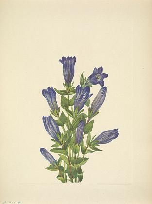 |
Ruff Gentian |
Gentiana calycosa |
318 |
|
0.769349 |
Gentian (Gentiana affinis) |
1915 |
lower left in watercolor: Apollinaris Spring/8-29-1915- |
|
Moss Campion |
Silene acaulis |
367 |
|
0.780797 |
Moss Campion (Silene acaulis) |
1924 |
lower left in watercolor: M. V. W./Wild Flower Camp/14 8.20.1924.\r\nback lower right in pencil: 6 |
 |
Fringed Polygala |
Polygala paucifolia |
135 |
|
0.780833 |
Fringed Polygala (Polygala paucifolia) |
1920 |
lower left in watercolor: M. V. W./5.16.1920. \r\nback lower right in pencil: Polygala paucifolia/1970.355.473 |
|
Trailing-arbutus |
Epigaea repens |
126 |
|
0.781682 |
Trailing Arbutus (Epigaea repens) |
1917 |
lower left in watercolor: Washinton (sic)/4.14.1917. |
|
Pyxie |
Pyxidanthera barbulata |
124 |
|
0.781909 |
Pyxie (Pyxidanthera barbulata) |
1919 |
lower left in watercolor: 4.15.1919.\r\nback lower right in pencil: Pyxidanthera barbulata |
|
Rocky Mountain Cassiope |
Cassiope mertensiana |
75 |
|
0.782066 |
Rocky Mountain Cassiope (Cassiope mertensiana) |
1924 |
lower left in watercolor: M. V. W./Baker Lake/8.9.1924/10\r\nback lower right in pencil: White Heather |
|
Alpine Pointvetch (fruit) |
Oxytropis podocarpa |
283 |
|
0.786371 |
Alpine Pointvetch (Oxytropis podocarpa) |
1918 |
lower right in watercolor: Bow Lake/8.16.1918 |
|
Alpine Harebell |
Campanula lasiocarpa |
368 |
|
0.787347 |
Alpine Harebell (Campanula lasiocarpa) |
n.d. |
back lower right in pencil: 5 |
|
Ghostpipe |
Thaleia uniflora |
156 |
|
0.793488 |
Ghostpipe (Thalesia uniflora) |
1920 |
lower right in watercolor: M. V. W./5.29:20 |
|
Slender Shootingstar |
Dodecatheon pauciflorum (Durand) |
276 |
|
0.794060 |
Slender Shootingstar (Dodecatheon pauciflorum) |
1909 |
lower left in watercolor: Lake Louise/7.1909 |
|
Pitcherplant |
Sarracenia purpurea |
52 |
|
0.796147 |
Hybrid Pitcherplant (Sarracenia rubra xs purpurea venosa) |
1920 |
lower left in watercolor: MVW/5.12.1920 |
|
Grassleaf Agoseris |
Agoseris graminifolia |
88 |
|
0.803302 |
Grassleaf Agoseris (Agoseris graminifolia) |
1905 |
lower left in watercolor: Lake Louise/8.13.1905\r\nback center in pencil: Agoseris |
|
Small Cranberry |
Oxycoccus palustris |
180 |
|
0.806111 |
Small Cranberry (Oxycoccus palustris) |
1911 |
lower left in watercolor: Lake Louise/7.22.1911 |
|
Glaucialrly |
Erythronium grandiflorum |
68 |
|
0.809936 |
Glacierlily (Erythronium grandiflorum) |
1899 |
lower left in watercolor: M. M. V./Glacier/8/9 '99\r\nlower right in watercolor: Mt. Avalanche |
|
Alpine Pointvetch (flower) |
Oxytropis podocarpa |
282 |
|
0.811234 |
Alpine Pointvetch (Oxytropis podocarpa) |
1916 |
lower left in watercolor: Wonder Pass/Mt Assiniboine/7.25.1916\r\nback center in pencil: Physostegia (all rock garden stuff |
|
Pale Pinesap |
Hypopitys americana |
157 |
|
0.818494 |
Pale Pinesap (Hypopitys americana) |
1918 |
lower left in watercolor: Washington/6.16.1918. |
|
Lake Louise Arnica |
Arnica louiseana |
10 |
|
0.819273 |
Lake Louise Arnica (Arnica louisiana) |
1922 |
lower left in watercolor: M. V. W./Clearwater/8.5.1922/9. |
 |
Purple Saxifrage |
Saxifraga oppositifolia |
42 |
 |
0.820644 |
Purple Saxifrage (Saxifraga oppositifolia) |
1924 |
lower right in watercolor: M. V. W./Baker Lake/7.31.1924 7 |
|
Sweet Pitcherplant |
Sarracenia rubra |
250 |
|
0.822363 |
Sweet Pitcherplant (Sarracenia rubra) |
1920 |
lower left in watercolor: M. V. W./5.29.1920.(underlined) |
| 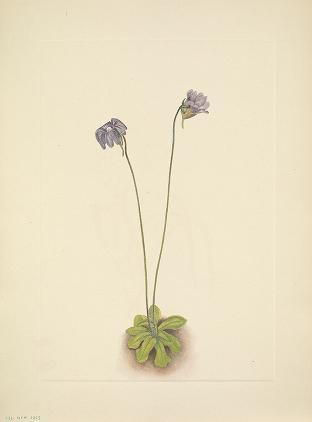 |
Purple Butterwort |
Pinguicula elatior |
235 |
 |
0.824034 |
Purple Butterwort (Pinguicula elatior) |
1920 |
lower right in watercolor: M. V. W./3.26.1920.\r\nback lower left in pencil: 235 |
 |
Highbush Blackberry |
Rubus argutus |
146 |
 |
0.825100 |
Highbush Blackberry (Rubus argutus) |
1919 |
lower right corner in watercolor: M. V. W./5.26.1919.\r\nback lower left in pencil: Rubus argutus |
|
Bearberry (flower) |
Arctostaphylos uva-ursi (Linnaeus) |
111 |
|
0.826033 |
Bearberry (Arctostaphylos uva-ursi) |
1916 |
lower left in watercolor: Mt. Assiniboine/7.28-1916 |
|
Nodding Campion |
Lychnis apetala |
279 |
|
0.826390 |
Nodding Campion (Lychnis apetala) |
1905 |
lower left in watercolor: McArthur's Lake/7.26.1905.\r\nback center in pencil: Sychnis affinis |
|
Alpine Monkeyflower |
Mimulus caespitosus |
375 |
|
0.830084 |
Alpine Monkey Flower (Mimulus caespitosus) |
1904 |
lower left in watercolor: Glacier/1904\r\nback center in pencil: mimulus luteus/van alpinus- |
|
Field Violet |
Viola rafinesquii Greene |
211 |
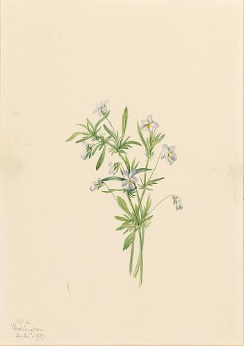 |
0.831821 |
Field Violet (Viola rafinesquii) |
1919 |
lower left in watercolor: M. V. W./Washington/4.25.1919\r\nback center in pencil: 1 (in a circle)\r\nback lower right in pencil: viola rafinesquii |
 |
Yellow Troutlily |
Erythronium americanum |
339 |
|
0.833168 |
Glacierlily (Erythronium grandiflorum) |
1899 |
lower left in watercolor: M. M. V./Glacier/8/9 '99\r\nlower right in watercolor: Mt. Avalanche |
|
Grouse Whortleberry (flower) |
Vaccinium scoparium |
169 |
 |
0.833669 |
Grouse Whortleberry (Vaccinum scoparium) |
1916 |
lower right in watercolor: Mt. Assinibaine (sic) /7.27.1916 |
|
Snow Willow |
Salix nivalis |
277 |
|
0.834994 |
Snow Willow (Salix nivalis) |
1918 |
lower left in watercolor: Bour Lake/8.15.1918. |
|
Ivory Baneberry |
Actaea arguta |
73 |
|
0.835149 |
Ivory Baneberry (Actaea arguta) |
1922 |
lower left in watercolor: M V. W./Vermilion Camp/9.12.1922/19 |
|
Missouri Pricklypear |
Opuntia polyacantha |
35 |
|
0.837360 |
Walkingstick Cholla (Opuntia imbricata) |
1934 |
lower left in watercolor: MVW/Santa Fe/6.30.34 |
|
Red Chokeberry (flower) |
Aronia arbutifolia |
31 |
|
0.839299 |
Red Chokeberry (Aronia arbutifolia) |
ca. 1920s |
back lower right in pencil: CH |
| 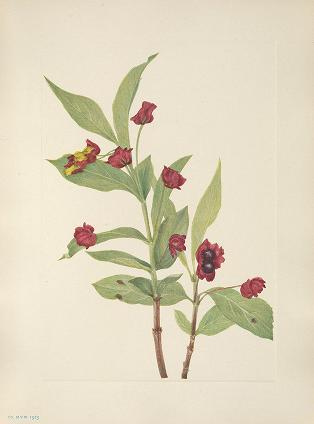 |
Bearberry Honeysuckle |
Lonicera involucrata |
60 |
|
0.839516 |
Bearberry Honeysuckle (Lonicera involucrata) |
1917 |
lower left in watercolor: Hector/7.22.1917 |
|
Southern Coast Violet |
Viola septemloba |
142 |
|
0.840522 |
Southern Coast Violet (Viola septemloba) |
1919 |
lower right in watercolor: 3.31.1919.\r\nback lower left in pencil: Viola septemloba |
|
Silverberry (fruit) |
Elaeagnus commutata |
71 |
|
0.842580 |
Silverberry (Elaeagnus commutata) |
1922 |
lower right in watercolor: M. V. W./Kootenay Park/9.19.1922 22\r\nback lower center in pencil: 1 (in a circle) |
|
Rock Willow |
Salix petrophila |
106 |
|
0.842914 |
Rock Willow (Salix petrophila) |
1917 |
lower left in watercolor: Burgess Pass/8.15.1917 |
|
Heliotrope Valerian |
Valeriana sitchensis |
366 |
|
0.843854 |
Heliotrope Valerian (Valeriana sitchensis) |
1917 |
lower left in watercolor: Burgess Pass/9.2.1917. |
|
Ocotillo |
Fouquieria splendens |
396 |
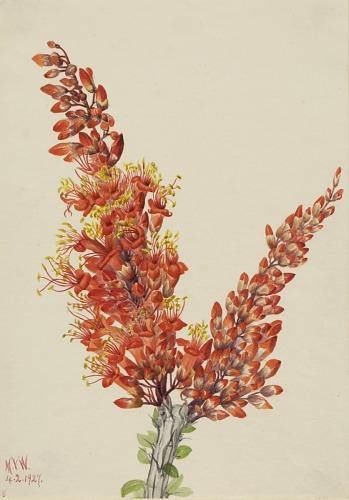 |
0.844577 |
Ocotillo (Fouquieria splendens) |
1927 |
lower left in watercolor: M. V. W./4.2.1927./8 |
|
Partridgeberry |
Mitchella repens Linnaeus |
207 |
 |
0.844630 |
Partridgeberry (Mitchella repens) |
1925 |
lower left in watercolor: M. V. W./Beaufort. S.C. 4.9.25\r\nback center in pencil: 1 (in a circle) |
|
Pinebarren Gentian |
Gentiana parryi |
8 |
|
0.849080 |
Pinebarren Gentian (Gentiana porphyrio) |
1923 |
lower right in watercolor: M. V. W./10.27.1923 |
|
Anemolena |
Symsdonia thalictroides |
14 |
|
0.849243 |
Anemonella (Syndesmon thalictroides) |
1917 |
lower left in watercolor: Washington/4.24.1917 |
|
Quaker-ladies |
Houstonia caerulea |
59 |
|
0.849817 |
Quakerladies (Houstonia caerulea) |
1917 |
lower left in watercolor: Washington/4.24.1917 |
|
Virginia Spiderwort |
Tradescantia virginiana |
40 |
|
0.849914 |
Virginia Spiderwort (Tradescantia virginiana) |
1920 |
lower left in watercolor: M. V. W./5.27.20 |
 |
Indianpipe |
Monotropa uniflora |
262 |
 |
0.850402 |
Indian Pipe (Monotropa uniflora) |
1926 |
lower left in watercolor: M. V. W./S. W. Harbor/8.13.1926. |
|
Krushea (flower) |
Krushea streptopoides |
56 |
|
0.850569 |
Kruhsea (Kruhsea streptopoides) |
1913 |
lower left in watercolor: Glacier/7.15.1913\r\nback upper center in pencil: 2\r\n |
|
Sand Phacelia |
Phacelia linariifolia (Pursh) Holzinger |
197 |
|
0.850853 |
Sand Phacelia (Phacelia linearis) |
1923 |
lower left in watercolor: M. V. W./Sinclair Canon/4.6.16.1923. |
 |
Yellow Fringedorchid |
Habenaria ciliaris |
340 |
 |
0.852685 |
Yellow Fringe Orchid (Habenaria ciliaris) |
1926 |
lower left in watercolor: M. V. W./Saugatuck/9.1.1926 |
 |
Green Pyrola |
Pyrola chlorantha |
113 |
 |
0.856174 |
Green Pyrola (Pyrola chlorantha) |
1920 |
lower right in watercolor: M. V. W./Spruce Tree Camp/Siffleur River/8.6.1920 |
 |
Plume Anemone (fruit) |
Pulsatilla occidentalis |
164 |
 |
0.857685 |
Plume Anemone (Pulsatilla occidentalis) |
1923 |
lower left in watercolor: M. V. W./Lake of Hanging/19.8.3.1923 Glaciers |
|
Golden Fleabane |
Erigeron aureus |
280 |
 |
0.857878 |
Golden Fleabane (Erigeron aureus) |
1904 |
lower left in watercolor: Saddle Back/Lake Louise 8.27.1904 |
|
Bluegreen Gentian |
Gentiana glauca |
108 |
|
0.858914 |
Bluegreen Gentian (Gentiana glauca) |
1916 |
lower left in watercolor: Ptarmigan Valley/8.18.1916 |
|
White Dryad (flower) |
Dryas octopetala |
176 |
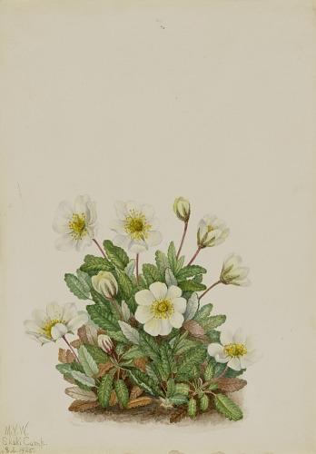 |
0.859305 |
White Dryad (Dryas octopetala) |
1925 |
lower left in watercolor: M. V. W./Skoki Camp./15 8.2.1925. |
|
Wood Skullcap |
Scutellaria serrata |
237 |
 |
0.860456 |
Wood Skullcap (Scutellaria serrata) |
1917 |
lower left in watercolor: M.V.W./5.25.1917 |
|
Papaw |
Asimina triloba |
328 |
|
0.862936 |
Papaw (Asimina triloba) |
1918 |
lower right in watercolor: Plummer's Island/5.1.1918. |
|
Pink Ladyslipper |
Cypripedium acaule |
327 |
|
0.863498 |
Small Yellow Ladyslipper (Cypripedium parviflorum) |
1917 |
lower right in watercolor: Washington/6.5.1917\r\nback upper right in ink: 4 |
|
Pygmy Androsace |
Androsace subumbellata (A. Nelson) Small |
185 |
|
0.863613 |
Pygmy Androsace (Androsace subumbellata) |
1921 |
lower left in watercolor: M. V. W./Badger Camp/12.8.9.1921. |
 |
Bogbean |
Menyanthes trifoliata |
225 |
 |
0.863723 |
Bogbean (Menyanthes trifoliata) |
1925 |
lower left in watercolor: M. V. W./Lake Louise/9. 7.7.1925. |
 |
Tufted Saxifrage |
Saxifraga caespitosa Linnaeus |
184 |
|
0.864329 |
Tufted Saxifrage (Saxifraga caespitosa) |
1921 |
lower left in watercolor: M. V. W./Badger Camp/8.8.1921.\r\nback lower left in pencil: 10 |
|
Foxglove Penstemon |
Penstemon digitalis (Sweet) Nuttall |
209 |
 |
0.864859 |
Foxglove Pentstemon (Pentstemon digitalis) |
1919 |
lower left in watercolor: M. V. W./6.11.1919.\r\nback upper left in pencil: 209 |
|
Strawberry-blite |
Chenopodium capitatum |
349 |
|
0.864931 |
Strawberry-Blite (Chenopodium capitatum) |
1918 |
lower right in watercolor: Bow Valley/7.19.1918 |
|
Arrowleaf Groundsel |
Senecia triangularis |
385 |
|
0.865208 |
Arrowleaf Groundsel (Senecia triangularis) |
1916 |
lower right in watercolor: Evelyn Glacier/9.8.1916. |
|
Yellow Cucumbertree |
Magnolia cordata |
330 |
|
0.865396 |
Yellow Cucumbertree (Magnolia cordata) |
1922 |
lower left in watercolor: M. V. W./4.29.1922/4\r\nback lower center in pencil: top (written upside down) |
|
American Mistletoe |
Phoradendron flavescens (Pursch) |
265 |
|
0.865711 |
American Mistletoe (Phoradendron flavescens) |
1923 |
lower right in watercolor: M. V. W./1.2.1923 \r\nlower left in watercolor: 1 \r\nback lower right in pencil: 1 |
|
American Pasqueflower (fruit) |
Pulsatilla ludoviciana |
96 |
|
0.867080 |
American Pasqueflower (Pulsatilla ludoviciana) |
1920 |
lower left in watercolor: M. V. W.Ghost River/7.12.1920/6 |
|
Yellow Dryad (fruit) |
Dryas drummondii |
365 |
 |
0.869816 |
Yellow Dryad (fruit) (Dryas drummondii) |
1920 |
lower left in watercolor: M. V. W./Spruce Tree Camp/Siffleur River/21 8.16.1920.\r\nlower right in pencil: 365 |
|
Bloodroot |
Sanguinaria canadensis |
123 |
|
0.870129 |
Bloodroot (Sanguinaria canadensis) |
1917 |
lower left in watercolor: M. V. W./4.21.1917\r\nback lower right in pencil: VoL. 2 #123 |
 |
Deathcamas |
Zigadenus elegans |
116 |
|
0.870487 |
Deathcamas (Zygadenus elegans) |
1917 |
lower left in watercolor: Burgess Pass/8.12.1917\r\nlower right in watercolor: Helen |
|
Fringed Parnassia |
Parnassia fimbriata |
343 |
|
0.870798 |
Fringed Parnassia (Parnassia fimbriata) |
1905 |
lower left in watercolor: Lake O'hara/8.15.1905. |
|
Blue-eyed-grass |
Sisyrinchium angustifolium |
238 |
|
0.870979 |
Blue-eyed-grass (Sisyrinchium angustifolium) |
1920 |
lower right in watercolor: M. V. W./Ghost River/7.14.1920.\r\nlower left in watercolor: 7 |
 |
Western Rattlesnakeplantain |
Peramium decipiens |
350 |
|
0.871231 |
Western Rattlesnake Plantain (Peranium decipiens) |
1905 |
lower left in watercolor: Deutchman's Cave/8.1.1905 Trilv.\r\nback center in pencil: Yoodyeara menziesii |
|
Nodding Ladies-tresses |
Ibidium cernuum |
4 |
|
0.871301 |
Nodding Ladies-Tresses (Ibidium cernum) |
1905 |
lower left in watercolor: Mount Kisco/9.27.1905- |
|
Red Monkeyflower |
Diplacus puniceus |
315 |
 |
0.872652 |
Red Monkeyflower (Diplaucus puniceus) |
1920 |
lower left in watercolor: M. V. W./San Diego/3 4.14.20 |
|
Alpine Forget-me-not |
Myosotis alpestris |
352 |
|
0.873330 |
Alpine Forget-me-not (Myosotis alpestris) |
1924 |
lower left in watercolor: M. V. W./Baker Lake/7 8.4.1924. |
 |
San Diego Mariposa |
Calochortus weedii Wood |
199 |
|
0.873512 |
San Diego Mariposa (Calochortus weedii) |
1925 |
lower left in watercolor: M. V. W./San Diego 6.26.'25. |
 |
Yellow Willow-weed |
Epilobium luteum |
300 |
|
0.874225 |
Yellow Willow-Weed (Epilobium lutem) |
1906 |
lower right in watercolor: Glacier/7.1906 |
 |
Brook Lobelia |
Lobelia kalmii Linnaeus |
192 |
|
0.874447 |
Brook Lobelia (Lobelia kalmii) |
1923 |
lower left in watercolor: M. V. W./Canal Flats/13. 7.14.1923. |
|
Butterflyweed |
Asclepias tuberosa |
36 |
 |
0.874582 |
Butterfly Weed (Ascelpias tuberosa) |
1919 |
lower left in watercolor: M. V. W./6.21.1919. |
|
Mistletoad |
Ramorinoa officinalis |
98 |
|
0.875415 |
Mistmaiden (Romanzoffia sitchensis) |
1907 |
lower right in watercolor: Lake Louise/7.29.1907\r\nback upper right in ink: 11 |
|
Spiderlily |
Hymenocallis rotata |
154 |
|
0.876247 |
Spider Lily (Hymenocallis rotata) |
1919 |
lower right in watercolor: M. V. W/10.23.1919. |
|
Tassel Cottonsedge |
Eriophorum angustifolium |
312 |
|
0.876883 |
Tassel Cottongrass (Eriophorum angustifolium) |
1920 |
lower left in watercolor: M. V. W./Pipestone Pass/8.20.1920./23 |
| 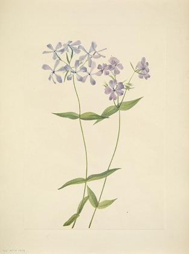 |
Blue Phlox |
Phlox divaricata |
245 |
|
0.878056 |
Blue Phlox (Phlox divaricata) |
1917 |
lower left in watercolor: Great Falls/5.19.1917\r\nback lower right in pencil: 245\r\n |
|
Venus Flytrap |
Dionaea muscipula |
219 |
|
0.879224 |
Venus Flytrap (Dionaea muscipula) |
1918 |
lower right in watercolor: 4.21.1918. |
|
Scarlet Mariposa |
Calochortus kennedyi |
391 |
|
0.880026 |
Scarlet Mariposa (Calochortus kennedyi) |
1926 |
lower left in watercolor: M. V. W./5.21.1926. |
|
Small Pyrola |
Pyrola minor |
172 |
|
0.880435 |
Small Pyrola (Pyrola minor) |
1922 |
lower left in watercolor: M. V. W./Pipestone/8 7.29.1922. |
|
Virginia Springbeauty |
Claytonia virginica |
234 |
|
0.880655 |
Virginia Springbeauty (Claytonia virginica) |
1919 |
lower right in watercolor: M. V. W. \r\nlower left in watercolor: Washington/4.24.1919 |
|
Rose Pogonia |
Pogonia ophioglossoides |
218 |
|
0.881021 |
Rose Pogonia (Pogonia ophioglossoides) |
1906 |
lower left in watercolor: Tuckerton/6.26.1906\r\nback upper left in pencil: 218 |
|
Alberta Primrose |
Primula mistassinica |
274 |
|
0.881402 |
Alberta Primrose (Primula maccalliana) |
1917 |
lower left in watercolor: Hector/7.12.1917.\r\nback lower left in pencil: 2 |
 |
Cut Toothwort |
Dentaria laciniata |
249 |
|
0.881746 |
Cut Toothwort (Dentaria laciniata) |
1918 |
lower right in watercolor: Washington/4.15.1918. |
|
Ladder Gentian |
Gentiana acuta |
294 |
|
0.881854 |
Ladder Gentian (Gentiana acuta) |
1916 |
lower left in watercolor: Hector/8.25.1916. |
|
Showy Oxytrope |
Oxytropis splendens |
120 |
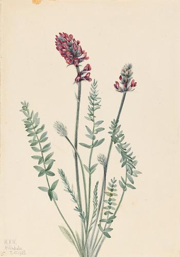 |
0.882044 |
Showy Oxytrope (Oxytropis splendens) |
1922 |
lower left in watercolor: M. V. W./Hillsdale/5 7.15.1922. |
|
Rocky Mountain Twayblade |
Ophrys nephrophylla |
109 |
|
0.882449 |
Rocky Mountain Twayblade (Ophrys necrophylla) |
1919 |
lower left in watercolor: Yoho Lake/8.5.1919. |
|
Bowmanstroot |
Porteranthus trifoliatus |
252 |
 |
0.883038 |
Bowmansroot (Porteranthus trifoliatus) |
1919 |
lower right in watercolor: M. V. W./6.9.1919. |
|
Double Bladderpod (fruit) |
Physaria didymocarpa |
168 |
|
0.883746 |
Double Bladderpod (Physaria didymocarpa) |
1920 |
lower left in watercolor: M. V. W./Pipestone Pass/8.18.1920./22 |
 |
Sweet Androsace |
Androsace carinata |
107 |
|
0.884097 |
Sweet Androsace (Androsace carinata) |
1916 |
lower left in watercolor: Ptarmigan Valley/8.14.1916 |
| 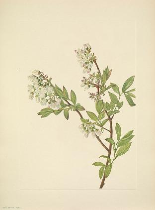 |
Highbush Blueberry |
Vaccinium corymbosum |
228 |
 |
0.884906 |
Highbush Blueberry (Vaccinium corymbosum) |
1922 |
lower left in watercolor: M. V. W./4 5.10.1922 |
|
Slim Larkspur |
Delphinium depauperatum |
384 |
|
0.885014 |
Slim Larkspur (Delphinium depauperatum) |
1924 |
lower left in watercolor: M. V. W./Wild Flower Camp/12. 8.14.1924 |
|
Columbia Lily |
Lilium columbianum |
316 |
|
0.885516 |
Columbia Lily (Lilium columbianum) |
1925 |
lower left in watercolor: M. V. W./Regnier Park/6.29.1925 |
|
Purple Mountain Violet |
Viola adunca |
181 |
|
0.885560 |
Purple Mountain Violet (Viola adunca) |
1918 |
lower left in watercolor: Bow Lake/7.21.1918 |
|
Chickasaw Plum |
Prunus angustifolia |
130 |
|
0.885755 |
Chickasaw Plum (Prunus angustifolia) |
1920 |
lower left in watercolor: M. V. W./4.23.1920. |
|
California Pitcherplant |
Chrysamphora californica |
390 |
|
0.886037 |
California Pitcherplant (Chrysamphora californica) |
1924 |
lower left in watercolor: M. V. W./4.23.1924./11\r\nupper left in pencil: 390 |
 |
Canada Violet |
Viola canadensis |
347 |
 |
0.887158 |
Canada Violet (Viola canadensis) |
1903 |
lower left in watercolor: Lake Louise/8.22.1903\r\nlower right in pencil: 347 (barely legible)\r\nback lower center in pencil: viola canadensis |
|
Pink Centaurium |
Centaurium venustum |
303 |
|
0.888421 |
Pink Centaurium (Centaurium venustum) |
1925 |
lower left in watercolor: M. V. W./Torrey Pines/6.28.1925 |
|
Red Willowweed |
Epilobium latifolium |
370 |
 |
0.888592 |
Red Willowweed (Epilobium latifolium) |
1911 |
lower left in watercolor: Glacier/8.17.1911\r\nlower right in pencil: 370 |
|
Zenobia |
Zenobia cassinifolia (Ventenant) |
264 |
|
0.888853 |
Zenobia (Zenobia cassinifolia) |
1927 |
lower left in watercolor: M. V. W./6.10.1927 \r\nback lower right in pencil: 1 |
|
Slender Agoseris |
Agoseris gracilens |
89 |
|
0.889312 |
Slender Agoseris (Agoseris gracilens) |
1922 |
lower left in watercolor: M. V. W./Douglas Lake/8.22.'22 Camp/13 |
 |
Sand Naked Springbeauty |
Claytonia parviflora |
94 |
 |
0.889553 |
Naiad Spring Beauty (Claytonia parvifolia) |
1905 |
lower left in watercolor: Glacier/7.25.1905.\r\nback center in pencil: Claytonia parvifolia |
|
Lyall Larch |
Larix lyallii |
381 |
|
0.889830 |
Lyall Larch (Larix lyallii) |
1913 |
lower right in watercolor: Alpine Club/McArthur Lake/7.23.1913- |
|
White Epidenrum |
Epiderdrum nocturnum |
337 |
|
0.890103 |
White Epidendrum (Epidendrum nocturnum) |
1919 |
lower left in watercolor: M. V. W./12.1919.\r\nback lower center in pencil: epidendrum nocturnum |
|
Northern Anemone |
Anemone parviflora |
371 |
|
0.890943 |
Northern Anemone (Anemone parviflora) |
1924 |
lower left in watercolor: M. V. W./Wild Flower Camp/13 8.18.1924\r\nback lower right: (illegible) |
|
Bunchberry (flower) |
Cornus canadensis |
271 |
|
0.891090 |
Bunchberry (Cornus canadensis) |
1902 |
lower right in watercolor: Lake Louise/1902\r\nlower right in pencil: 3 |
|
Krushea (fruit) |
Krushea streptopoides |
56a |
|
0.891318 |
Kruhsea (Kruhsea streptopoides) |
1922 |
lower left in watercolor: M. V. W. /Glacier/9.8.1922/17 |
|
Rocky Mountain Kalmia |
Kalmia microphylla (Hooker) |
284 |
|
0.892254 |
Rocky Mountain Kalmia (Kalmia microphylla) |
n.d. |
lower left in watercolor: Avalance Crest\r\nupper right in pencil: TOP(barely legible)/284\r\nback center in pencil: Kalmia Glauca |
 |
Yaupon |
Ilex vomitoria |
226 |
|
0.892412 |
Yaupon (Ilex vomitoria) |
1926 |
lower left in watercolor: M. V. W/Beaufort/2 3.16.1926. |
 |
Yellow Penstemon |
Penstemon confertus |
357 |
|
0.892615 |
Yellow Pentstemon (Pentstemon confertus) |
1904 |
lower left in watercolor: Beaverfoot\r\nlower right in watercolor: 8.17.1904\r\nback center: pentstemon confertus |
|
Devilsclub |
Echinopanax horridum |
32 |
|
0.892737 |
Devilsclub (Echinopanax horridum) |
1917 |
lower left in watercolor: Burgess Pass/9.12.1917\r\nlower right in watercolor: Helen |
 |
Skunkcabbage |
Spathyema foetida |
37 |
|
0.893210 |
Skunk Cabbage (Spathyema foetida) |
1918 |
lower left in watercolor: Washington/3.23.1918 |
| 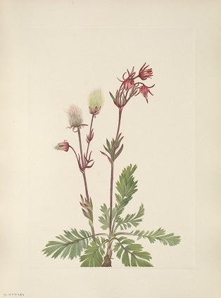 |
Prairie-smoke |
Sieversia ciliata |
53 |
|
0.893548 |
Prairie-Smoke (Sieversia ciliata) |
1921 |
lower left in watercolor: M. V. W./Hillsdale/7.11.21\r\nlower right in watercolor: 4 |
|
Virginia Bluebells |
Mertensia virginica |
20 |
|
0.894016 |
Virginia Bluebells (Mertensia virginica) |
1919 |
lower left in watercolor: Washington/4.10.1919 Blue Bell\r\nback lower right in pencil: Mertensia virginica\r\n |
|
Pink Fleabane |
Erigeron caespitosus |
61 |
 |
0.894322 |
Pink Fleabane (Erigeron caespitosus) |
1921 |
lower left in watercolor: M.V.W./Sascatchewan/8.28.1921./20 |
|
Ragged Fringe-orchid |
Habenaria lacera |
215 |
 |
0.894540 |
Ragged Fringe-orchid (Habenaria lacera) |
1918 |
lower right in watercolor: Washington/6.25.1918. |
 |
Box Huckleberry |
Gaylussacia brachycera |
229 |
|
0.895718 |
Box Huckleberry (Gaylussacia brachycera) |
1919 |
lower right in watercolor: 3.31.1919\r\nback lower left: Gaylussacia brachycera 19 |
|
White Dawnrose |
Pachylophus marginatus |
387 |
|
0.895773 |
White Dawnrose (Pachyloplus marginatus) |
n.d. |
lower left in watercolor: 7 |
|
Tarlflower |
Befaria racemosa |
17 |
|
0.895824 |
Tarflower (Befaria racemosa) |
1922 |
lower left in watercolor: M. V. W./6.1.1922/13 \r\nback lower center in pencil: Tarflower/Befaria Racemosa/(fam. Ericaceae) native of Florida\r\nback upper center in pencil: 2 |
|
Bog Kalmia |
Kalmia polifolia |
133 |
|
0.895918 |
Bog Kalmia (Kalmia polifolia) |
1922 |
lower left in watercolor: M. V. W./4.10.1922/2\r\nback lower right in pencil: 1970.355.471 |
|
Bush Cinquefoil |
Potentilla fruticosa |
77 |
 |
0.896601 |
Bush Cinquefoil (Potentilla fruticosa) |
1917 |
lower right in watercolor: Burgess Pass/9.9.17.\r\nlower left in watercolor: Helen |
|
Bunchberry (fruit) |
Cornus canadensis |
272 |
|
0.896640 |
Bunchberry (Cornus canadensis) |
1916 |
lower left in watercolor: Hector/9.8.1916 |
|
Painted Trillium |
Trillium undulatum |
134 |
|
0.897254 |
Painted Trillium (Trillium undulatum) |
1924 |
lower right in watercolor: M. V. W./5.17.'24\r\nlower left in watercolor: 7\r\nback lower right in pencil: 1970.355.472 |
|
Purple Mountain Violet |
Viola adunca |
181 |
|
0.898447 |
Purple Mountain Violet (Viola adunca) |
1918 |
lower left in watercolor: Bow Lake/7.21.1918 |
|
Curly Clematis |
Clematis crispa |
150 |
|
0.898784 |
Curly Clematis (Clematis crispa) |
1925 |
lower left in watercolor: M. V. W./Beaufort/4.10.25 \r\nback lower right: 150 |
|
Queencup (fruit) |
Clintonia uniflora (Menzies) Kunth |
204 |
|
0.899809 |
Queencup (Clintonia uniflora) |
1922 |
lower left in watercolor: M. V. W./Glacier/16 9.7.1922 |
|
Cowposion |
Chamaecrista nictitans |
147 |
 |
0.900493 |
Crowpoison (Chrosperma muscaetoxicum) |
1921 |
lower right in watercolor: M. V. W./1921\r\nlower left in watercolor: Wash'n |
 |
Yellow Dryad (flower) |
Dryas drummondii |
364 |
 |
0.900560 |
Yellow Dryad (Dryas drummondii) |
1904 |
lower left in watercolor: Ice River Valley/Camp Goodsir\r\nlower right in watercolor: 8.15.'04\r\nlower right in pencil: 364 (barely legible)\r\nback center in pencil: dryas drummondii |
|
Large Purple Fringe-orchid |
Habenaria grandiflora |
243 |
|
0.901137 |
Large Purple Fringe-Orchid (Habenaria grandiflora) |
1926 |
lower left in watercolor: M. V. W./S. W. Harbor/4.17.1926. |
 |
Vernal Iris |
Iris verna |
13 |
 |
0.901447 |
Vernal Iris (Iris verna) |
1918 |
lower right in pencil: Beaufort SC/3.14.1918 |
 |
Plume Anemone (flower) |
Pulsatilla occidentalis |
163 |
|
0.901505 |
Plume Anemone (Pulsatilla occidentalis) |
1917 |
lower left in watercolor: Lake OHara/7.18.1917. |
|
Alpine Fornocel |
Pedicularis contorta |
121 |
|
0.901525 |
Alpine Fernlife (Pedicularis contorta) |
1907 |
lower right in watercolor: Lake Louise/7.30.1907 |
|
Avalanche Buttercup |
Ranunculus adscendens |
114 |
|
0.901621 |
Avalanche Buttercup (Ranunculus suksdorfii) |
1919 |
lower left in watercolor: M. V. W./Burgess Pass/7.17.1919. |
|
Goldenbowl Mariposa |
Calochortus clavatus |
314 |
|
0.901873 |
Goldenbowl Mariposa (Calochortus claratus) |
1926 |
lower left in watercolor: M. V. W./5.21.'26 |
|
Avalanche-lily |
Erythronium montanum Watson |
202 |
|
0.901962 |
Avalanche Lily (Erythronium montanum) |
1925 |
lower left in watercolor: M. V. W./Reynier Park. 6.27.1925.\r\nback lower center: avalanche lily |
|
Bushpoppy |
Dendromecon rigida |
392 |
|
0.902153 |
Bushpoppy (Dendromecon rigidum) |
1927 |
lower left in watercolor: M. V. W./Tucson/4 3.24.1927 |
|
Northern Butterbur |
Petasites hyperboreus Rydb. |
189 |
|
0.902551 |
Northern Butterbur (Petasites hyperboreus) |
1916 |
lower left in watercolor: Simpson Pass/8.3.1916. |
|
Pussy-cars |
Calochortus elegans |
2 |
|
0.902581 |
Pussy-ears (Calochortus elegans) |
1923 |
lower left in watercolor: M. V. W./Cranbrook/14. 7.15.1923.\r\nback lower left in pencil: Warsposa Lilly (sic) |
 |
One-leaf-bog-orchid |
Habenaria obtusata |
76 |
|
0.902582 |
One-Leaf-Bog-Orchid (Habenaria obtusata) |
1922 |
lower right in watercolor: M. V. W./Hillsdale/7.13.1922 3 |
|
Clusterlily |
Hookera paviflora |
389 |
|
0.902700 |
Wild Hyacinth (Brodiaea pulchella) |
1927 |
lower left in watercolor: M. V. W./2 Tucson |
|
Douglas Honeysuckle (flower) |
Lonicera glaucescens |
81 |
|
0.902728 |
Douglas Honeysuckle (Lonicera glaucescens) |
1919 |
lower left in watercolor: Lake Minnewanka/7. 7.1919. |
|
Fireweed |
Epilobium angustifolium |
301 |
|
0.902935 |
Fireweed (Epilobium angustifolium) |
1922 |
lower left in watercolor: M. V. W./Red Deer Camp/11 8.12.1922. |
|
Prairie Aster |
Aster campestris |
118 |
|
0.903036 |
Prairie Aster (Aster campestris) |
1923 |
lower left in watercolor: M. V. W./Dry Creek Camp./23. 8.19.1923-\r\nback lower right in pencil: #118 |
|
Prairie Penstemon |
Penstemon erianthera |
50 |
 |
0.903340 |
Prairie Pentstemon (Pentstemon erianthera) |
1923 |
lower left in watercolor: M. V. W./Sinclair Canon/6.15.1923-/3 |
|
Fire Penstemon |
Penstemon eatonii |
394 |
|
0.903447 |
Fire Pentstemon (Pentstemon eatonii) |
1927 |
lower left in watercolor: M. V. W./Tucson/5 3.25.1927 |
|
Burggs Milkvetch |
Astragalus bourgovii |
21 |
|
0.903609 |
Burgess Milkvetch (Astragalus bourgovii) |
1922 |
lower left in watercolor: M. V. W./Hillsdale/7.21.1922/7\r\nback lower center in pencil: 3 |
|
Orange-eye Globemallow |
Sphaeralcea davidsonii |
311 |
|
0.903801 |
Orange-Eye Globemallow (Sphaeralcea davidsonii) |
1926 |
lower left in watercolor: M. V. W./Santa Anna Ranch/4.25-1926. |
 |
Silverberry (flower) |
Elaeagnus commutata |
70 |
|
0.903888 |
Silverberry (Elaeagnus commutata) |
1920 |
lower right in watercolor: M.V.W./Ghost River/7.16.1920 |
 |
Red Pinesap |
Hypopitys lanuginosa |
213 |
 |
0.903932 |
Red Pinesap (Hypopitys lanuginosa) |
1920 |
lower left in watercolor: M. V. W./10.18.1920.\r\nback upper left in pencil: 214 |
|
Alaska Fleabane |
Erigeron salsuginosus (Richardson) |
290 |
|
0.904121 |
Alaska Fleabane (Erigeron salsuginosus) |
1925 |
lower left in watercolor: M. V. W./Tilted Mtn Camp./11 7.22.1925 |
|
Woodnymph |
Moneses uniflora (Linnaeus) |
273 |
|
0.904193 |
Wood Nymph (Moneses uniflora) |
1925 |
lower left in watercolor: M. V. W./Baker Lake/7-1925.\r\nback lower right in pencil: 4 |
|
Gray Phacelia |
Phacelia sericea (Graham) |
278 |
|
0.904289 |
Gray Phacelia (Phacelia sericea) |
1911 |
lower left in watercolor: Glacier/8.7.1911 |
| 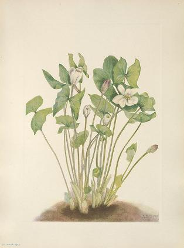 |
Twinleaf |
Jeffersonia diphylla |
72 |
|
0.904736 |
Twinleaf (Jeffersonia diphylla) |
1919 |
lower right in watercolor: 3.25.1919 |
|
Spotted Saxifrage |
Saxifraga bronchialis |
110 |
|
0.904789 |
Spotted Saxifrage (Saxifraga bronchialis) |
1903 |
lower left in watercolor: Moraine Lake/8.20.'03.\r\nback lower right in pencil: Saxifraga bronchialis |
|
Beautyberry |
Callicarpa americana Linnaeus |
210 |
|
0.904917 |
Beauty Berry (Callicarpa americana) |
1923 |
lower right in watercolor: M. V. W./1.8.1923\r\nlower left in watercolor: 3 |
 |
Calypso |
Cypripedium bulbosum (Linnaeus) |
105 |
 |
0.905405 |
Calypso (Cytherea bulbosa) |
1916 |
lower left in watercolor: Glacier Park/6.16.16 |
|
Creeping Juniper |
Juniperus horizontalis |
379 |
|
0.906131 |
Creeping Juniper (Juniperus horizontalis) |
1918 |
lower right in watercolor: Saskatchewan River/8.11.1918. |
|
Showy Orchis |
Orchis spectabilis |
241 |
|
0.906233 |
Showy Orchis (Orchis spectabilis) |
1926 |
lower left in watercolor: M. V. W./Washington/5.13.'26 |
|
Scarlet Globe-mallow |
Sphaeralcea grossulariifolia |
398 |
|
0.906356 |
Scarlet Globe Mallow (Sphaeralcea grossulariaefolia) |
1927 |
lower left in watercolor: M. V. W./Tucson/6 4.1.'27 |
|
Skeletonflower |
Lygodesmia juncea |
9 |
|
0.906720 |
Skeleton Flower (Lygodesmia juncea) |
1923 |
lower left in watercolor: M. V. W./Kootenay River Bridge/7.22.1923-/7 |
|
Pink Mountain-heather |
Phyllodoce empetriformis |
74 |
|
0.907259 |
Pink Mountain Heather (Phyllodoce empetriformis) |
1924 |
lower left in watercolor: M. V. W./Burgess Pass/7.15.1924/4 |
|
Spotted Cyttropedium |
Cyttropedium punctatum (Linnaeus) Lindley |
212 |
|
0.907666 |
Spotted Cyrtopodium (Cyrtopodium punctatum) |
1920 |
lower left in watercolor: M. V. W./5.14.1920. (underlined)\r\nback lower center in pencil: Cyrtopodium punctatum) |
|
Orange Polygala |
Polygala lutea |
257 |
|
0.907800 |
Orange Polygala (Polygala lutea) |
1926 |
lower left in watercolor: M. V. W./6.6.1926 |
|
Shootingstar |
Dodecatheon meadia |
49 |
 |
0.908232 |
Shooting Star (Dodecatheon meadia) |
1919 |
lower right in watercolor: M. V. W./5.7.1919\r\nback lower center in pencil: 4 (in a circle) |
 |
Bronzebells |
Stenanthera occidentalis |
64 |
|
0.908331 |
Bronzebells (Stenanthium occidentale) |
1906 |
lower right in watercolor: LakeLouise/7.30.1906.\r\nback lower left in pencil: B-3 |
|
Wild Calla |
Calla palustris |
129 |
|
0.908512 |
Wild Calla (Calla palustris) |
1919 |
lower right in watercolor: M. V. W./Chapleau/6.27.1919.\r\nback upper right in pencil: 129/Vol. 2 |
|
Deerberry |
Polycodium stamineum (Linnaeus) |
132 |
 |
0.908512 |
Deerberry (Polycodium stamineum) |
1922 |
lower left in watercolor: M. V. W./10 5.17.1922. \r\nback lower right in pencil: #132 |
 |
Tall Larkspur |
Delphinium elongatum |
27 |
|
0.908684 |
Tall Larkspur (Delphinium elongatum) |
1920 |
lower left in watercolor: M. V. W./Spruce Tree/Camp/Siffleur River/8.11.1920/16\r\nback center in pencil: 2 (in a circle) |
 |
Pineland Aster |
Aster squarrosus |
160 |
|
0.909369 |
Pineland Aster (Aster squarrosus) |
1922 |
lower left in watercolor: M. V. W./11.4.1922. |
|
Rosebud Orchid |
Pogonia divaricata |
242 |
|
0.909534 |
Rosebud Orchid (Pogonia divaricata) |
1926 |
lower left in watercolor: M. V. W./5.19.1926. |
|
Ramshead Ladyslipper |
Cypripedium arietinum |
216 |
|
0.909622 |
Ramshead Lady's Slipper (Cypripedium arietinum) |
1924 |
lower left in watercolor: M. V. W/5.9.1924\r\nlower right in watercolor: 4 |
|
Lambkill |
Kalmia angustifolia |
326 |
|
0.910662 |
Lambkill (Kalmia angustifolia) |
1918 |
lower left in watercolor: Washington/5.16.1918. |
|
Goldenstar |
Chrysogonum virginianum |
145 |
|
0.911146 |
Golden Star (Chrysogonum virginianum) |
1922 |
lower left in watercolor: M. V. W./5.14.1922/9 |
 |
White Pea |
Lathyrus ochroleucus |
85 |
|
0.912266 |
White Pea (Lathyrus ochroleucus) |
1920 |
lower right in watercolor: M. V. W./Lake Minnewanka/7.22.1920/14 |
| 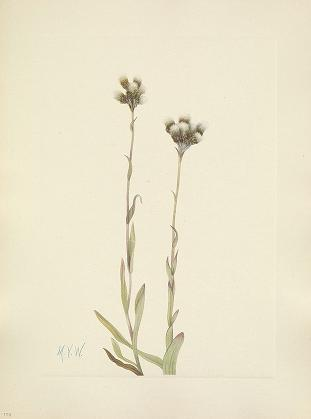 |
Gray Pussytoes |
Antennaria howellii |
104 |
|
0.912857 |
Gray Pussytoes (Antennaria howellii) |
1921 |
lower left in watercolor: M. V. W./Saskatchewan/8.26.1921/19 |
|
Blue-eyed-mary |
Collinsia verna |
246 |
|
0.913416 |
Blue-Eyed Mary (Collinsia verna) |
1927 |
lower left in watercolor: M. V. W./Washington/12 5.3.'27 |
|
Arum Arrowhead |
Sagittaria cuneata |
158 |
|
0.913509 |
Arum Arrowhead (Sagittaria cuneata) |
1923 |
lower left in watercolor: M. V. W./24.8.21.1923 |
|
Nodding Onion |
Allium cernuum |
304 |
 |
0.913638 |
Nodding Onion (Allium cernuum) |
1901 |
lower right in watercolor: 8. 12. 1901.\r\nlower left in watercolor: Camp Sodalite/Ice River Valley |
 |
Mexican Fremontia |
Fremontodendron mexicanum Davidson |
206 |
|
0.914109 |
Mexican Fremontia (Fremontodendron mexicanum) |
1926 |
lower right in watercolor: M. V. W./Los Angeles/4.30.1926. |
 |
Sweetbay |
Magnolia virginiana |
325 |
 |
0.914141 |
Sweetbay (Magnolia virginiana) |
1927 |
lower left in watercolor: M. V. W./6.8.1927 |
| 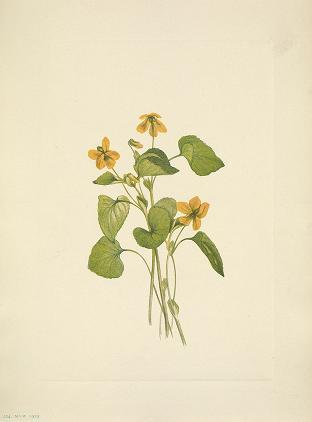 |
Smooth Yellow Violet |
Viola eriocarpa |
224 |
|
0.914192 |
Smooth Yellow Violet (Viola eriocarpa) |
1919 |
lower left in watercolor: Washington/4.22.1919.\r\nback upper left in pencil: 224\r\nback lower left in pencil: Viola eriocarpa |
|
Peatpink |
Silene caroliniana |
248 |
|
0.914421 |
Peatpink (Silene caroliniana) |
1917 |
lower left in watercolor: Great Falls/5.20.1917.\r\nback lower right in pencil: I |
|
Evening-primrose |
Pachylophus bistii |
388 |
|
0.914892 |
Evening Primrose (Pachyoplus hirsutus) |
1927 |
lower left in watercolor: M V W 3.29 '27/9 Roosevelt Dam |
|
Rock Wormwood |
Artemisia discolor |
288 |
|
0.914927 |
Rock Wormwood (Artemisia discolor) |
1917 |
lower left in watercolor: Burgess Pass/8.16.1917. |
|
Prickly Currant (fruit) |
Ribes lacustre |
67 |
|
0.915092 |
Prickly Currant (Ribes lacustre) |
1919 |
lower left in watercolor: Glacier Lake/9.6.1919. |
|
Pineland Blueberry |
Vaccinium tenellum |
230 |
|
0.915439 |
Pineland Blueberry (Vaccinium tenellum) |
1918 |
lower right in watercolor: Beaufort S. C./3.13.1918. |
 |
Witch-hazel |
Hamamelis virginiana |
323 |
|
0.915872 |
Witch Hazel (Hamamelis virginiana) |
1922 |
lower left in watercolor: M. V. W./11.23.1922. |
|
Northern Bedstraw |
Galium boreale |
63 |
|
0.915949 |
Northern Bedstraw (Galium boreale) |
1922 |
lower left in watercolor: M. V. W./Hillsdale/7.19.1922./4 |
 |
Squawroot |
Conopholis americana |
214 |
 |
0.916054 |
Bear Corn (Conopholis americana) |
1919 |
lower left in watercolor: M. V. W./5.20.1919\r\nback lower left in pencil: Conopholis americanum |
|
Western Cranesbill |
Geranium erianthum |
307 |
|
0.916241 |
Western Cranesbill (Geranium viscosissimum) |
1925 |
lower left in watercolor: M. V. W./Tilted Mtn Camp./7.28.1925. |
|
Pinkshell Azalea |
Azalea vaseyi |
253 |
|
0.916286 |
Pinkshell Azalea (Azalea vaseyi) |
1925 |
lower left in watercolor: M. V. W./H (illegible).30.1925. |
|
Redstem Saxifrage |
Saxifraga lyallii |
363 |
|
0.916318 |
Redstem Saxifrage (Saxifraga lyallii) |
1916 |
lower left in watercolor: Paradise Valley/8.21.1916\r\nlower right in pencil: 363 (barely legible)\r\nback lower right in pencil: 2 |
|
Queencup (flower) |
Clintonia uniflora (Menzies) Kunth |
203 |
|
0.916653 |
Queencup (Clintonia uniflora) |
1924 |
lower left in watercolor: M. V. W./Burgess Pass/2 7.12.1924 |
|
Bourgeau Rose (flower) |
Rosa bourgeauiana |
344 |
 |
0.916845 |
Bourgeau Rose (Rosa bourgeauiana) |
1920 |
lower right in watercolor: M.V.W./Lake Minewanka/7.19.1920 11\r\nback lower center in pencil: 344 |
|
Northern Ladyslipper |
Cypripedium passerinum |
91 |
|
0.917223 |
Northern Lady's Slipper (Cypripedium passerinum) |
1916 |
lower left in watercolor: Banff/7.10.1916. |
 |
Hooded Ladies-tresses |
Ibidium striatum |
356 |
 |
0.917822 |
Hooded Ladies-Tresses (Ibidium strictum) |
1918 |
lower right in watercolor: Head Saskathewan/8.5.1918.\r\nback lower right in pencil: 3 |
 |
Arethusa |
Arethusa bulbosa |
57 |
 |
0.917917 |
Arethusa (Arethusa bulbosa) |
1918 |
lower right in watercolor: Washington/5.25.1918. |
 |
Lanceleaf Paintbrush |
Castilleja lanatafolia |
102 |
 |
0.918384 |
Giant Red Paintbrush (Castilleja miniata) |
1921 |
lower left in watercolor: M. V. W./Molar Creek Camp/8.19.1921./14 |
|
Hepatica |
Hepatica americana |
125 |
|
0.918444 |
Hepatica (Hepatica americana) |
1917 |
lower left in watercolor: M. V. W./1917 |
| 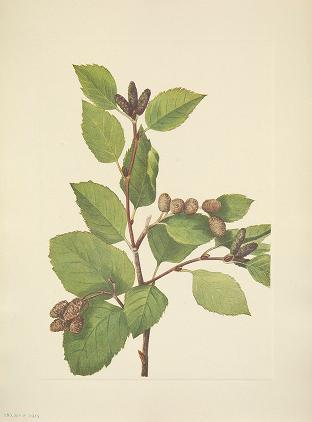 |
Western Green Alder |
Alnus sinuata (Regel) Rydb. |
186 |
|
0.918509 |
Western Green Alder (Alnus sinuata) |
1922 |
lower right in watercolor: M. V. W./Glacier/9.9.1922/18 |
 |
American Vetch |
Vicia americana Muhlenberg |
190 |
|
0.918671 |
American Vetch (Vicia americana) |
1922 |
lower left in watercolor: M. V. W./Hillsdale/6 7.15.1922 |
|
Buff Monkeyflower |
Diplacus longiflorus Nuttall |
200 |
|
0.919271 |
Buff Monkeyflower (Diplacus longiflorus) |
1926 |
lower left in watercolor: M. V. W./Los Angeles/4.21.26 |
|
Squirrelcorn |
Bicuculla canadensis |
136 |
|
0.919536 |
Squirrel Corn (Bikukulla canadensis) |
1920 |
lower right in watercolor: M. V. W./5.4.1920\r\nback lower right in pencil: Squirrel corn/Bikukulla/canadensis |
|
Western Menziesia |
Menziesia glabella |
298 |
|
0.919558 |
Western Menziesia (Menziesia glabella) |
1924 |
lower left in watercolor: M. V. W./Volto/6 7.19.1924 |
|
Douglas Honeysuckle (fruit) |
Lonicera glaucescens |
82 |
|
0.919726 |
Douglas Honeysuckle (Lonicera glaucescens) |
1922 |
lower right in watercolor: M. V. W./Simpson Camp/9.15.1922/20 |
|
Siberian Onion |
Allium sibiricum |
383 |
 |
0.920095 |
Siberian Onion (Allium sibericum) |
1903 |
lower right in watercolor: Lake Louise/1903. |
 |
Red Chokeberry (fruit) |
Aronia arbutifolia |
31a |
 |
0.920576 |
Red Chokeberry (Aronia arbutifolia) |
1920 |
lower right in watercolor: M. V. W./11.1.1920 |
|
Carolina Jessamine |
Gelsemium sempervirens |
220 |
|
0.920808 |
Carolina Jessamine (Gelsemium sempervirens) |
1926 |
lower left in watercolor: M. V. W./Beaufort/1 3.11.26 |
|
Drummond Pitcherplant |
Sarracenia drummondii |
329 |
|
0.921122 |
Drummond Pitcherplant (Sarracenia drummondii) |
1921 |
lower right in watercolor: M. V. W./4.19.'21 |
 |
Trumpetleaf |
Sarracenia flava |
25 |
|
0.921412 |
Trumpetleaf (Sarracenia flava) |
1920 |
lower right in watercolor: M. V. W./5.5.1920 |
|
Woolly Arnica |
Arnica tomentosa |
348 |
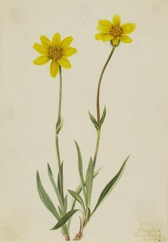 |
0.921448 |
Woolly Arnica (Arnica tomentosa) |
1920 |
lower right in watercolor: M. V. W./Siffleur River/Spruce Tree Camp./8.13.1920. 17 |
|
Parrot Pitcherplant |
Sarracenia psittacina |
236 |
|
0.921560 |
Parrot Pitcherplant (Sarracenia psittacina) |
1925 |
lower left in watercolor: M. V. W./5.14.1925.\r\nback upper left in pencil: Hybrid pitcherplant/traittacina minor/Waynesboro, Georgia |
|
Bur-forget-me-not |
Lappula diffusa |
351 |
|
0.921715 |
Bur-forget-me-not (Lappula diffusa) |
1903 |
lower left in watercolor: Lake Louise/8.17.1903.\r\nback lower center in pencil: (illegible) |
 |
Fringetree |
Chionanthus virginicus |
140 |
|
0.922258 |
Fringe Tree (Chionanthus virginica) |
1922 |
lower left in watercolor: M. V. W./Washington/1922. |
|
Riverbank Gentian |
Gentiana affinis |
87 |
|
0.922315 |
Riverbank Gentian (Gentiana affinis) |
1924 |
lower left in watercolor: M. V. W./Scotch Camp/Red Deer River/9.3.1924/17\r\nback lower left in pencil: MVW |
|
Showy Milkweed |
Asclepias speciosa |
90 |
|
0.922572 |
Showy Milkweed (Asclepias speciosa) |
1923 |
lower left in watercolor: M.V.W./Fairmount Hot Springs/7.10.1923/12 |
|
Wright Penstemon |
Penstemon wrightii |
386 |
|
0.922679 |
Parry's Penstemon (Penstemon parryi) |
1927 |
lower left in watercolor: M. V. W./Tucson/1 3.15.1927- |
|
Owl-clover |
Orthocarpus tenuifolius |
119 |
|
0.923018 |
Owl-clover (Orthocarpus tenuifolius) |
1923 |
lower left in watercolor: M. V. W./Kootenay Bridge/16 8.21.1923. |
|
Saussurea |
Saussurea detonsa (Hooker) Rydb. |
191 |
|
0.923052 |
Saussurea (Saussurea densa) |
1925 |
lower left in watercolor: M. V. W./Tilted Mtn. Camp./7.29.1925. |
|
Cucumbertree |
Magnolia acuminata |
231 |
|
0.923777 |
Cucumbertree (Magnolia acuminata) |
1922 |
lower left in watercolor: M. V. W./8 5.13.1922 |
|
Grass-pink Orchid |
Limodorum tuberosum |
131 |
|
0.923856 |
Grass-pink Orchid (Limodorum tuberosum) |
n.d. |
NaN |
|
Trumpetcreeper |
Bignonia radicans |
227 |
|
0.923994 |
Trumpet Creeper (Bignonia radicans) |
1926 |
lower left in watercolor: M. V. W./7.31.1926\r\nback upper left in pencil: 227 |
|
Pussy Willow |
Salix discolor |
122 |
 |
0.924412 |
Pussy Willow (Salix discolor) |
1920 |
lower left in watercolor: M. V. W./3.27.1920. |
|
Grayleaf Fivefinger |
Potentilla glaucophylla |
296 |
|
0.924425 |
Grayleaf Fivefinger (Potentilla glaucophylla) |
1905 |
lower left in watercolor: Lake O'Hara/8.15.1905.\r\nback center in pencil: potentilla |
|
Red-helmet |
Pedicularis bracteosa |
258 |
|
0.924554 |
Red-Helmet (Pedicularis bracteosa) |
1924 |
lower right in watercolor: M. V. W./Baker Lake/8.2.1924 8\r\nupper left in pencil: 258 |
 |
Spotted Beebalm |
Monarda punctata |
233 |
|
0.924742 |
Spotted Bee Balm (Monarda punctata) |
1919 |
lower right in watercolor: M. V. W./10.27.1919.\r\nback lower left in pencil: 233 |
|
Red Dewberry |
Rubus pedatus |
293 |
|
0.924798 |
Red Dewberry (Rubus pedatus) |
1918 |
lower left in watercolor: Evelyn Glacier/9.10.1918. |
|
Pale Strawberry |
Fragaria glauca |
362 |
|
0.924985 |
Pale Strawberry (Fragaria glauca) |
1917 |
lower left in watercolor: Burgess Pass/8.6.1917.\r\nback upper left in pencil: 362 |
 |
White Globeflower |
Trollius albiflorus |
353 |
 |
0.925014 |
White Globeflower (Trollius albiflorus) |
1899 |
lower left in watercolor: Near Asulkan Shack/8/12 '99\r\nback center pencil: trollius laxa |
|
Prickly Currant (flower) |
Ribes lacustre |
66 |
 |
0.925067 |
Prickly Currant (Ribes lacustre) |
1917 |
lower left in watercolor: Burgess Pass/7.27.1917\r\nlower right in watercolor: Helen |
|
Star Solomonplume |
Vagnera stellata |
166 |
 |
0.925146 |
Star Solomonplume (Vagnera stellata) |
1921 |
lower left in watercolor: M. V. W./Hillsdale/3 7.1.1921. |
|
American Twinflower |
Linnaea borealis americana (Forbes) Rehder |
196 |
|
0.925301 |
American Twinflower (Linnaea borealis americana) |
1902 |
lower right in watercolor: Lake Louise/1902 |
|
Western Yarrow |
Achillea lanulosa |
151 |
|
0.925336 |
Western Yarrow (Achillea lanulosa) |
1922 |
lower left in watercolor: M. V. W./Red Deer Camp/12 8.16.1922. |
|
Elephanthead |
Pedicularis groenlandica |
373 |
|
0.925470 |
Elephanthead (Pedicularis groenlandica) |
1916 |
lower left in watercolor: Ptarmigan Valley/8.11.1916 |
| 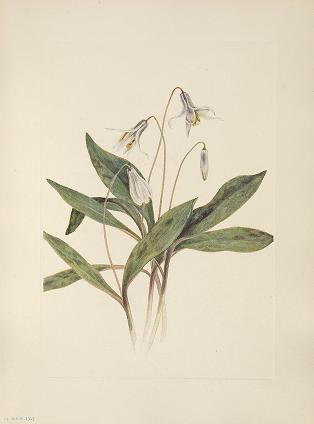 |
White Troulity |
Erythronium albidum |
15 |
|
0.925485 |
White Troutlily (Erythronium albidum) |
1919 |
lower left in watercolor: Washington/4.8.1919. \r\nback lower center in pencil: Erythronium albidum\r\nback upper center in ink: 3\r\n |
|
Oconee Bells |
Shortia galacifolia |
19 |
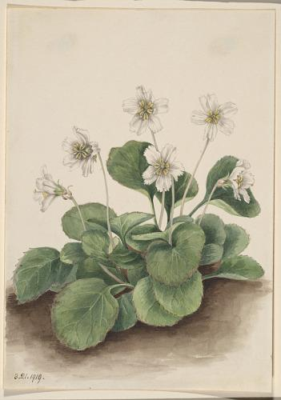 |
0.925726 |
Oconee-Bells (Shortia galacifolia) |
1919 |
lower left in watercolor: 3.21.1919\r\nback upper center in pencil: 4 |
|
Goldenpea |
Thermopsis rhombifolia |
297 |
|
0.926148 |
Goldenpea (Thermopsis rhombifolia) |
1923 |
lower left in watercolor: M. V. W./Medicine Hat/1 6.3.1923. |
|
Lilac Mariposa |
Calochortus splendens |
310 |
|
0.926472 |
Lilac Mariposa (Calochortus splendens) |
1926 |
lower left in watercolor: M. V. W./Los Angeles/4.25.1926. |
 |
Woolly Agoseris |
Agoseris villosa Rydb. |
195 |
|
0.926572 |
Woolly Agoseris (Agoseris villosa) |
1919 |
lower left corner in watercolor: Glacier Lake/8.24.1919.\r\nback lower left in pencil: 23 |
|
Greendragon |
Arisaema dracontium |
22 |
|
0.926750 |
Greendragon (Arisaema dracontium) |
1920 |
lower right in watercolor: M. V. W./6.11.1920 |
|
Double Bladderpod (flower) |
Physaria didymocarpa |
167 |
|
0.926753 |
Double Bladderpod (Physaria didymocarpa) |
1920 |
lower left in watercolor: M. V. W./7.4.1920./2\r\nlower right in watercolor: Lake Minnewonka\r\nback in pencil: 28 |
 |
Western Bluebells |
Mertensia paniculata |
173 |
 |
0.927374 |
Western Bluebells (Mertensia paniculata) |
1920 |
lower left in watercolor: M. V. W./Ghost River/3 7.9.1920. |
|
Virginia Stewartia |
Stewartia malacodendron |
333 |
|
0.927375 |
Virginia Stewartia (Stewartia malachodendron) |
1925 |
lower left in watercolor: M. V. W./5.8.1925\r\nback lower center in pencil: 333/Stuartia |
|
Flowering Dogwood (fruit) |
Cornus florida |
322 |
 |
0.927419 |
Flowering Dogwood (Cornus florida) |
1926 |
lower left in watercolor: M. V. W./Washington/11.1.1926 |
|
Pink Fumewort |
Capnoides sempervirens |
5 |
|
0.927545 |
Pink Fumeroot (Capnoides sempervirens) |
1922 |
lower right in watercolor: M. V. W./Kootenay Camp/9.18.1922/21 |
| 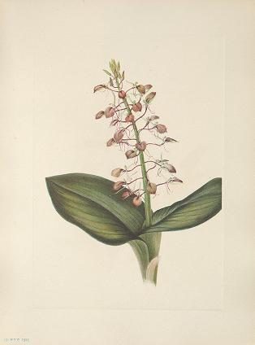 |
Lily Twqyblade |
Lipoaris liliifolia |
34 |
|
0.927636 |
Lily Twayblade (Liparis liliifolia) |
1920 |
lower left in watercolor: M. V. W./6.5.'20 |
|
Red Comandra |
Comandra livida |
361 |
|
0.927855 |
Red Comandra (Comandra livida) |
1919 |
lower left in watercolor: M. V. W./Glacier Lake/9.7.1919. |
|
Partridgeberry |
Arctous alpina |
355 |
|
0.928057 |
Ptarmiganberry (Arctous alpina) |
1922 |
lower left in watercolor: M. V. W./Red Deer Camp/14 9.1.1922. |
|
Southern Magnolia (fruit) |
Magnolia grandiflora |
24a |
|
0.928105 |
Southern Magnolia (Magnolia grandiflora) |
1923 |
lower left in watercolor: M. V. W/Wash'n/10.15.1923 |
 |
Green Strawberry-cactus |
Echinocereus viridiflorus |
308 |
 |
0.928259 |
Green Strawberry Cactus (Echinocereus viridiflorus) |
1925 |
lower left in watercolor: M. V. W./5.5.1925. |
|
Western Mountain-ash |
Sorbus sambucifolia |
162 |
|
0.928293 |
Western Mountain Ash (Sorbus sambucifolia) |
1918 |
lower right in watercolor: Vermilion Pass/9.15.1918. |
 |
Hooded Pitcherplant |
Sarracenia minor |
251 |
 |
0.928407 |
Hooded Pitcherplant (Sarracenia minor) |
1925 |
lower left in watercolor: M. V. W./5.11.1925.\r\nback upper left in pencil: Hooded Pitcherplant/surracenia (sic) minor/Beaufort S. C. |
 |
Pearl Everlasting |
Anaphalis margaritacea (Linnaeus) |
289 |
|
0.928533 |
Pearl Everlasting (Anaphalis margaritacea) |
1917 |
lower left in watercolor: Moose Creek/9.26.1917 |
|
Purple Penstemon |
Penstemon lyallii |
346 |
|
0.928536 |
Purple Pentstemon (Pentstemon lyallii) |
1923 |
lower left in watercolor: M. V. W./Sinclair Canon/5 6.17.1923. |
|
Buff Pussytoes |
Antennaria luzuloides |
171 |
|
0.928641 |
Buff Pussytoes (Antennaria luzuloides) |
1917 |
lower left in watercolor: Burgess Pass/7.26.1917 |
|
Downy Pinxterbloom |
Azalea rosea |
232 |
|
0.928708 |
Downy Pinxter Bloom (Azalea rosea) |
1923 |
lower left in watercolor: M. V. W./4.14.1923 |
|
Menzies Penstemon |
Penstemon menziesii |
319 |
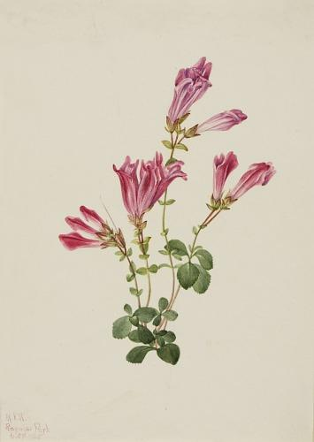 |
0.929063 |
Menzies Pentstemon (Pentstemon menziesii) |
1925 |
lower left in watercolor: M. V. W./Reynier Park/6.27.1925.\r\nlower right in pencil: 319 (barely legible) |
|
Cardinal Monkeyflower |
Mimulus cardinalis |
395 |
|
0.929093 |
Cardinal Monkey Flower (Mimulus cardinalis) |
1927 |
lower right in watercolor: M. V. W./4.7.1927./Grand Canyon 10 |
|
Balsamroot |
Balsamorhiza sagittata |
69 |
|
0.929144 |
Balsamroot (Balsamorhiza sagittata) |
1923 |
lower left in watercolor: Sinclair Canon/6.10.1923/2. |
|
Saskatoon |
Amelanchier alnifolia |
117 |
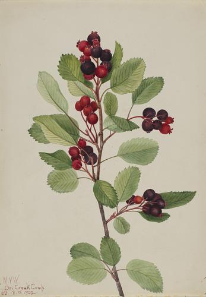 |
0.930021 |
Saskatoon (Amelanchier alnifolia) |
1923 |
lower left in watercolor: M. V. W./Dry Creek Camp/22 8.18.1923-\r\nbacking mat verso lower left in pencil: Vol.II/117/SASKATOON\r\nback lower right in pencil: #117 |
|
Sidesaddle Goldenrod |
Solidago elliota Greene |
183 |
|
0.930097 |
Sidesaddle Goldenrod |
1917 |
lower left in watercolor: Burgess Pass/9.8.1917. |
|
Mexican Poppy |
Eschscholzia mexicali |
393 |
|
0.930198 |
Mexican Poppy (Eschscholtzia mexicana) |
1927 |
lower left in watercolor: M. V. W. Tucson/3 2/21 '27 |
|
Lloyds Strawberry-cactus |
Echinocereus lloydii |
155 |
|
0.930314 |
Lloyd's Strawberry Cactus (Echinocereus lloydii) |
1925 |
lower left in watercolor: M. V. W./4.22.1925 \r\nback lower right in pencil: Lloyd's Strawberry Cactus/#155 |
|
Bourgeau Rose (fruit) |
Rosa bourgeauiana |
345 |
|
0.930924 |
Bourgeau Rose (Rosa bourgeauiana) |
1923 |
lower left in watercolor: M. V. W./Radium Hot Springs/27 8.29.1923- |
|
Aleutian Fleabane |
Erigeron unalaschkensis |
376 |
|
0.930972 |
Aleutian Fleabane (Erigeron unalaschensis) |
n.d. |
lower right in pencil: 376 |
|
Saltmarsh Roserigentia |
Sabatia stellaris |
342 |
|
0.931007 |
Saltmarsh Rosegentian (Sabbatia stellaris) |
1926 |
lower left in watercolor: M. V. W./Spring Lake/10.8.1926.\r\nback center in pencil: #342 (in a circle) |
 |
Maypop |
Passiflora incarnata |
324 |
|
0.931251 |
Maypop (Passiflora incarnata) |
1926 |
lower left in watercolor: M. V. W./7.10.1926 |
|
Beargrass |
Xerophyllum tenax |
302 |
|
0.931536 |
Beargrass (Xerophyllum tenax) |
1924 |
lower left in watercolor: M. V. W./Reynier Park/6.29.1924. |
|
American Waterlily |
Nymphaea odorata |
223 |
|
0.932429 |
American Waterlily (Castalia odorata) |
1920 |
lower right in watercolor: M. V. W./6.13.1920 |
|
Lewis Monkeyflower |
Mimulus lewisii |
374 |
|
0.932724 |
Lewis Monkey Flower (Mimulus lewisii) |
1899 |
lower right in watercolor: Glacier Trail/8/13 '99\r\nlower right in pencil: 374 (barely legible) |
|
Lemon Columbine |
Aquilegia flavenscens Watson |
201 |
|
0.932968 |
Lemon Columbine (Aquilegia flavescens) |
1925 |
lower right in watercolor: M. V. W./Plarmigan Camp./7.17.1925. |
|
Pink Pussytoes |
Antennaria rosea var. |
286 |
|
0.933350 |
Pink Pussytoes (Antennaria rosea) |
1916 |
lower left in watercolor: Lake Agnes/8.22.1916. |
|
Cranberrybush |
Viburnum edule |
317 |
 |
0.933382 |
Cranberrybush (Viburnum pauciflorum) |
1923 |
lower right in watercolor: M. V. W./Vermilion Camp/8.25.1923.\r\nlower left in watercolor: 26 |
|
Labrador-tea |
Ledum groenlandicum |
62 |
|
0.933575 |
Labrador Tea (Ledum groenlandicum) |
1922 |
lower left in watercolor: M. V. W./4.18.22\r\nback lower center in pencil: Labrador-Tea |
|
Carolina Maple |
Acer carolinianum |
138 |
|
0.933903 |
Carolina Maple (Acer carolinianum) |
1923 |
lower left in watercolor: M. V. W./Beaufort/3.15.1923 \r\nback lower right in pencil: #138 |
|
Leatherflower |
Clematis vinral |
41 |
 |
0.934033 |
Leather Flower (Clematis viorna) |
1920 |
lower right in pencil: M. V. W./6 17. '20 |
|
American Pasqueflower (flower) |
Pulsatilla ludoviciana |
95 |
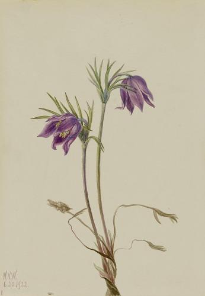 |
0.934399 |
American Pasqueflower (Pulsatilla ludoviciana) |
1922 |
lower left in watercolor: M. V. W./6.30.1922 |
|
Tampa Epidendrum |
Epidendrum tampense |
152 |
 |
0.934427 |
Tampa Epidendrum (Epidendrum tampense) |
1919 |
lower left in watercolor: M. V. W./6.21 1919. |
|
Rosebay Rhododendron |
Rhododendron maximum |
254 |
|
0.934507 |
Rosebay Rhododendron (Rhododendron maximum) |
1926 |
lower left in watercolor: M. V. W./7.5.1926 |
|
Mountain Juniper |
Juniperus sibirica |
86 |
|
0.934597 |
Mountain Juniper (Juniperus sibirica) |
1917 |
lower right in watercolor: Vermilion Pass/9.15.1917.\r\nback center in pencil: Juniperus sibirica\r\nback lower right in pencil: 86 Vol 2 |
 |
Camas |
Quamasia quamash |
358 |
|
0.934801 |
Camas (Quamasia quamash) |
1916 |
lower left in watercolor: Glacier Park/6.17.'16 |
|
False Locoweed |
Oxytropis gracilis |
3 |
|
0.935013 |
False Locoweed (Oxytropia gracilis) |
1920 |
lower right in watercolor: M. V. W./Ghost River/7.10.1920./H |
|
Rose Paintbrush |
Castilleja pallida |
48 |
|
0.935229 |
Rose Paintbrush (Castilleja pallida) |
1920 |
lower left in watercolor: M. V. W./Clerwater Camp/8.30.1920/27\r\nback center in pencil: 1 (in a circle) |
|
Western Pipeszva |
Chimaphila umbellata var. occidentalis |
360 |
|
0.935317 |
Western Pipsissewa (Chimaphila umbellata) |
1902 |
lower left in watercolor: Emerald Lake/9.1902\r\nback lower center in pencil: Chimphila Menziesii/(illegible) C. umbellata |
|
Goldenclub |
Orontium aquaticum |
222 |
|
0.935884 |
Goldenclub (Orontium aquaticum) |
1918 |
lower left in watercolor: Beaufort S.C./3.13.1918 |
|
Scarlet Elder |
Sambucus pubens |
260 |
|
0.936472 |
Scarlet Elder (Sambucus pubens) |
1922 |
lower left in watercolor: M. V. W./Glacier/15 9.6.1922 |
 |
Crowberry |
Empetrum nigrum |
382 |
 |
0.936501 |
Crowberry (Empetrum nigrum) |
1917 |
lower left in watercolor: Vermilion Pass/10.1.1917. |
|
Northern Butterwort |
Pinguicula vulgaris Linnaeus |
198 |
|
0.936556 |
Northern Butterwort (Pinguicula vulgaris) |
1903 |
lower right in watercolor: Lake Louise/1903 |
 |
American Wisteria |
Kraunhia frutescens |
149 |
|
0.936596 |
American Wisteria (Kraunhia frutescens) |
1925 |
lower left in watercolor: M. V. W./Beaufort-4.17.1925- |
|
Atamasco-lily |
Atamosco atamasco |
255 |
|
0.936695 |
Atamasco-Lily (Atamosco atamasco) |
1925 |
lower left in watercolor: M. V. W./Beaufort S. C./4.6.25 |
 |
Harebell |
Campanula rotundifolia |
369 |
|
0.936725 |
Harebell (Campanula rotundifolia) |
1916 |
lower left in watercolor: Hector/9.4.1916. |
 |
Globe Anemone |
Anemone globosa |
291 |
|
0.936924 |
Globe Anemone (Anemone globosa) |
1917 |
lower left in watercolor: Mt. Massive/7.11.1917. |
|
Tillandsia |
Tillandsia fasciculata |
153 |
|
0.936939 |
Wild Pineapple (Tillandsia fasciculata) |
1921 |
lower left in watercolor: M. V. W./5.26.1921.\r\nback lower right in pencil: #153/#153 |
 |
Perennial Gaillardia |
Gaillardia aristata |
354 |
 |
0.937026 |
Perennial Gaillardia (Gaillardia aristata) |
1904 |
lower left in watercolor: Field/8.9.1904\r\nlower right in pencil: 354 (barely legible)\r\nback center in pencil: Gaillardia aristata |
|
Marshmarigold |
Caltha palustris Linnaeus |
208 |
|
0.937509 |
Marsh Marigold (Caltha palustris) |
1924 |
lower right in watercolor: M. V. W./5.13.1924\r\nlower left in watercolor: 6\r\nback center in pencil: 1 |
 |
Rabbitean |
Cracca virgimiana |
44 |
|
0.937932 |
Rabbitbean (Cracca virginiana) |
1918 |
lower right in watercolor: Washington/5.28.1918 |
 |
Flowering Dogwood (flower) |
Cornus florida |
321 |
 |
0.937935 |
Flowering Dogwood (Cornus florida) |
1919 |
lower right in watercolor: M. V. W./Washington/4.30.1919\r\nlower right in pencil: 321 |
|
Sidebells Pyrola |
Pyrola secunda |
285 |
|
0.938152 |
Sidebells Pyrola (Pyrola secunda) |
1916 |
lower left in watercolor: Paradise Valley/8.18.1916.\r\nupper right in pencil: top 285 (barely legible) |
|
Meadow Fleabane |
Erigeron speciosus |
165 |
|
0.938433 |
Meadow Fleabane (Erigeron speciosus) |
1920 |
lower right in watercolor: M. V. W./Ghost river/7.16.1920/10 |
|
Whiteflowering Raspberry |
Rubus parviflorus |
341 |
|
0.939160 |
White Flowering Raspberry (Rubus parviflorus) |
1905 |
lower left in watercolor: Glacier/7.29.1905 |
|
Loblolly Pine |
Pinus taeda |
335 |
|
0.939604 |
Loblolly Pine (Pinus taeda) |
1918 |
lower right in watercolor: Beaufort S. C./3.13.1918.\r\nback lower right in pencil: 335 (underlined) |
|
Golden Sedge |
Carex aurea |
281 |
 |
0.939925 |
Golden Sedge (Carex aurea) |
1921 |
lower left in watercolor: M. V. W./Siffleur Valley/18 8.25.1921 |
|
Green Bearcabbage |
Veratrum viride |
174 |
 |
0.940058 |
Green Bear Cabbage (Veratrum viride) |
1918 |
lower right in watercolor: Bow Lake/7.24.1918. |
|
White Dryad (fruit) |
Dryas octopetala |
177 |
|
0.940326 |
White Dryad (Dryas octopetala) |
1920 |
lower left in watercolor: M. V. W./Clearwater Camp/8.28.1920/26 |
 |
American Columbine |
Aquilegia canadensis |
141 |
|
0.940507 |
American Columbine (Aquilegia canadensis) |
1919 |
lower right in watercolor: Washington/4.23.1919\r\nback lower center in pencil: Aquilegia canadensis #141 |
 |
Flame Azalea |
Azalea lutea |
43 |
|
0.941522 |
Flame Azalea (Azalea lutea) |
1921 |
lower left in watercolor: M. V. W./4.30.1921 |
|
Columbian Clematis (flower) |
Clematis columbiana |
99 |
|
0.941723 |
Columbia Clematis (Clematis columbiana) |
ca. 1900-1925 |
lower left in watercolor: Field |
|
Giant Arborvitae |
Thuja plicata Don |
187 |
|
0.941780 |
Giant Arborvitae (Thuja plicata) |
1923 |
lower right in watercolor: M. V. W./Golden/9.5.1923.29\r\nback lower right in pencil: 187 |
 |
Sweetvetch |
Hedysarum mackenzii |
97 |
 |
0.941845 |
Sweetvetch (Hedysarum mackenzii) |
1921 |
lower left in watercolor: M. V. W./Badger Pass Camp/11 8.4.1921 |
|
Mountain Cranberry (fruit) |
Vaccinium vitisidaea minus Loddiges |
194 |
|
0.942088 |
Mountain Cranberry (Vaccinium vitisdaea minus) |
1916 |
lower left in watercolor: Red Earth Creek/9.12.1916. |
|
Rocky Mountain Rhododendron |
Rhododendron albiflorum |
305 |
|
0.942364 |
Rocky Mountain Rhododendron (Rhododendron albiflorum) |
1901 |
lower left in watercolor: Glacier/1901\r\nback lower center in pencil: Rhododendron albiflorum |
|
Shortspur Columbine |
Aquilegia brevistyla |
292 |
 |
0.942995 |
Shortspur Columbine (Aquilegia brevistyla) |
1907 |
lower right in watercolor: M. V. W.\r\nlower left in pencil: (illegible)/1907(barely legible) |
|
Red Lily |
Lilium montanum |
11 |
|
0.943129 |
Red Lily (Lilium montanum) |
1923 |
lower left in watercolor: M. V. W./Sinclair Caon/10 7.2.1923. |
 |
Sweet Azalea |
Azalea arborescens |
55 |
|
0.943354 |
Sweet Azalea (Azalea arborescens) |
1921 |
lower left in watercolor: M. V. W./Washington/1921 |
|
Bluebead |
Clintonia borealis |
338 |
|
0.944373 |
Blue Bead (Clintonia borealis) |
1924 |
lower right in watercolor: M. V. W./5.5.1924\r\nlower left in watercolor: 2\r\nback upper left: 338 (upside down and underlined) |
|
Snow Trillium |
Trillium grandiflorum |
240 |
|
0.944390 |
Large White Trillium (Trillium grandiflorum) |
1923 |
lower right in watercolor: M. V. W./Wash'n 4.28.'23 \r\nlower left in watercolor: 4 |
 |
Red Maple |
Acer rubrum |
137 |
 |
0.945256 |
Red Maple (Acer rubrum) |
1920 |
lower right in watercolor: M. V. W./Spring Lake/4.1.1920- |
 |
Birdfsoot Violet |
Viola pedata |
39 |
 |
0.945696 |
Birdsfoot Violet (Viola pedata) |
1917 |
lower left in watercolor: Washington/4.25.1917. |
|
Quill-leaf Tillandsia |
Tillandsia fasciculata |
399 |
|
0.945754 |
Quill-Leaf Tillandsia (Tillandsia fasciculata) |
1929 |
lower left in watercolor: M. V. W../4.4.1929. |
|
Bearberry (fruit) |
Arctostaphylos uva-ursi (Linnaeus) |
112 |
|
0.945869 |
Bearberry (Arctostaphylos uva-ursi) |
1916 |
lower left in watercolor: Banff/9.25.1916. |
 |
Giant Trillium |
Trillium chloropetalum |
299 |
|
0.946136 |
Giant Trillium (Trillium chloropetalum) |
1921 |
lower left in watercolor: M. V. W./Boston/5.6.1921. |
|
Western Hemlock |
Tsuga heterophylla (Rafinesque) |
268 |
|
0.946205 |
Western Hemlock (Tsuga heterophylla) |
1923 |
lower left in watercolor: M. V. W./Glacier House/31 9.1.1923.\r\nlower right: 268 (written upside-down) |
|
Southern Magnolia (flower) |
Magnolia grandiflora |
24 |
|
0.946716 |
Southern Magnolia (Magnolia grandiflora) |
1918 |
lower right in watercolor: Washington/6.22.1918. |
|
Fringed Gentian |
Gentiana crinita |
336 |
|
0.946798 |
Fringed Gentian (Gentiana crinita) |
1905 |
lower right in watercolor: Mount Kisco 9/24 05\r\nback center in pencil: 336 (in a circle) |
|
Yucca |
Yucca baileyi |
397 |
|
0.947385 |
Yucca (Yucca baileyi) |
1928 |
lower right in watercolor: M. V. W./6.18.1928 |
|
Tuliptree |
Liriodendron tulipifera |
45 |
 |
0.947917 |
Tuliptree (Liriodendron tulipifera) |
1918 |
lower right in watercolor: Washington/5.26.1918 |
 |
Toad Trillium |
Trillium sessile |
23 |
|
0.948060 |
Toad Trillium (Trillium sessile) |
1920 |
lower right in watercolor: M. V. W./5.4.1920 |
|
Catesby Pitcherplant |
Sarracenia catesbaei |
400 |
|
0.948366 |
Catesby Pitcherplant (Sarracenia catesaei) |
1929 |
lower left in watercolor: M. V. W./4.10.1929 |
|
Limber Pine |
Pinus flexilis James |
188 |
|
0.948455 |
Limber Pine (Pinus flexilis) |
1920 |
lower right in watercolor: M. V. W./Lake Minnewanka/7.20.1920/12 |
|
Wood Merybells |
Uvularia perfoliata |
144 |
|
0.948873 |
Wood Merrybells (Uvularia perfoliata) |
n.d. |
NaN |
|
Dutchmans-breeches |
Bicuculla cucullaria |
247 |
|
0.949062 |
Dutchman's Breetches (Bikukulla cucullaria) |
1925 |
lower right in watercolor: M. V. W./1925\r\nback lower right in pencil: 5 |
 |
Elkship |
Caltha leptosepala De Candolle |
287 |
 |
0.949109 |
Elkslip (Caltha leptosepala) |
1916 |
lower right in watercolor: Mt. Assiniboine/7.24.1916. |
 |
Pinksherbroom |
Azalea nudiflora |
128 |
|
0.949328 |
Pinxter Bloom (Azalea nudiflora) |
1918 |
lower right in watercolor: Washington./5.8.1918.\r\nback lower right in pencil: #129 vol 2 |
 |
Mourning Groundsel |
Senecio lugens |
275 |
|
0.949806 |
Mourning Groundsel (Senecio lugens) |
1921 |
lower left in watercolor: M. V. W./Upper Pipestone/15 8.21.1921. |
|
Grouse Whortleberry (fruit) |
Vaccinium scoparium |
170 |
|
0.949993 |
Grouse Whortleberry (Vaccinium scoparium) |
1918 |
lower right in watercolor: Vermilion Pass/9.15.1918 |
|
Purple Prairiaclover |
Petalostemon purpureum |
320 |
|
0.950040 |
Purple Prairieclover (Petalostemon purpureum) |
1927 |
lower left in watercolor: M. V. W./Glacier Park/8.18.1927. |
|
Crested Iris |
Iris cristata |
33 |
|
0.950091 |
Crested Iris (Iris cristata) |
1918 |
lower right in watercolor: Plummersland/4.30.1918. |
|
Alpine Milkvetch |
Astragalus alpinus |
295 |
|
0.950462 |
Alpine Milkvetch (Astragalus alpinus) |
1921 |
lower right in watercolor: M. V. W./Badger Camp/8.19.1921\r\nlower left in watercolor: 8 |
 |
Jack-in-the-pulpit |
Arisaema triphyllum |
331 |
 |
0.950664 |
Jack-in-the-pulpit (Arisaema triphyllum) |
1917 |
lower left in watercolor: Washington/1917 |
|
Winterberry |
Ilex verticillata |
54 |
|
0.950741 |
Winterberry (Ilex verticillata) |
1920 |
lower left in watercolor: M. V. W./1.15.1920\r\nback lower right in pencil: Ilex decidua\r\nback upper right in pencil: Ilex migra |
|
Red Trillium |
Trillium erectum |
239 |
|
0.950900 |
Red Trillium (Trillium erectum) |
1918 |
lower right in watercolor: Washington/4.20.1918 |
 |
Canada Wildginger |
Asarum canadense |
127 |
 |
0.952085 |
Canada Wild Ginger (Asarum canadense) |
1920 |
lower left in watercolor: M. V. W./5.4.1920.\r\nback upper center in pencil: 127 |
|
White Thistle |
Cirsium hookerianum |
103 |
 |
0.952460 |
White Thistle (Cirsium hookeranum) |
n.d. |
back lower right in pencil: #103 |
 |
Wild Sweet Crab |
Malus coronaria |
51 |
|
0.952932 |
Wild Sweet Crab (Malus coronaria) |
1920 |
lower left in watercolor: M. V. W./1920 (barely legible) |
|
Turtledock |
Colocasia globra |
259 |
 |
0.952933 |
Turtlehead (Chelone glabra) |
1926 |
lower left in watercolor: M. V. W./Mt Desert/8.24.'26\r\nback center in pencil: 2 |
|
Forest Anemone |
Anemone deltoidea |
306 |
|
0.953130 |
Forest Anemone (Anemone deltoidea) |
1925 |
lower left in watercolor: M. V. W./Reynier Park/6.25.1925. |
|
Hazel Alder |
Alnus rugosa |
16 |
|
0.953553 |
Hazel Alder (Alnus regosa) |
1920 |
lower right in watercolor: M. V. W./3.24.1920. |
|
Small Yellow Ladyslipper |
Cypripedium parviflorum |
92 |
|
0.953704 |
Small Yellow Ladyslipper (Cypripedium parviflorum) |
1917 |
lower right in watercolor: Washington/6.5.1917\r\nback upper right in ink: 4 |
|
Canada Buffaloberry |
Lepargyra canadensis (Linnaeus) |
115 |
|
0.954075 |
Canada Buffaloberry (Lepargyrea canadensis) |
1916 |
lower left in watercolor: Hector/9.2.1916. |
|
Blueflag Iris |
Iris versicolor |
332 |
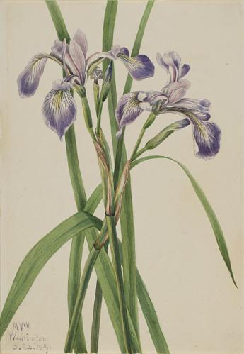 |
0.954328 |
Blueflag Iris (Iris versicolor) |
1919 |
lower left in watercolor: M. V. W./Washington/5.28.1919.\r\nback center in pencil: 332 (in a circle) |
 |
Mayapple |
Podophyllum peltatum |
143 |
|
0.954788 |
Mayapple (Podphyllum paltatum) |
1922 |
lower left in watercolor: M. V. W./6 5.4.1922. |
|
Pickerelweed |
Pontederia cordata |
29 |
 |
0.955052 |
Pickerelweed (Pontederia cordata) |
1919 |
lower right in watercolor: M. V. W./6.15.1919 |
|
Big Whortleberry |
Vaccinium membranaceum |
7 |
|
0.955165 |
Big Whortleberry (Vaccinium membranaceum) |
1916 |
lower left in watercolor: Hector/9.6.1916 |
|
Clasping Twistedstalk |
Streptopus amplexifolius |
84 |
|
0.957265 |
Clasping Twisted Stalk (Streptopus amplexifolius) |
1916 |
lower left in watercolor: Hector/9.5.1916 |
| 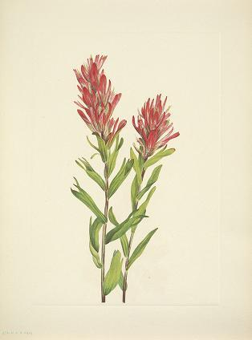 |
Alberta Paintbrush |
Castilleja miniata |
372 |
|
0.957458 |
Alberta Paintbrush (Catilleja miniata) |
1920 |
lower left in watercolor: M. V. W./Clearwater Camp/8.27.1920./25\r\nlower right in pencil: 372 |
|
Pale Ladyslipper |
Cypripedium acaule |
58 |
|
0.958315 |
Pale Lady's Slipper (Cypridedium acaule) |
1919 |
lower right in watercolor: M. V. W./5.15.1919\r\nback lower right in pencil: Cypridedium acaule |
|
Lodgepole Pine |
Pinus contorta murrayana |
101 |
|
0.958854 |
Lodgepole Pine (Pinus Contorta murrayana) |
1921 |
lower left in watercolor: M. V. W./Clearwater Camp/24 9.22.1921-\r\nback lower right in pencil: #101, Vol. 2 |
|
Alpine Fir |
Abies lasiocarpa |
18 |
|
0.959649 |
Alpine Fir (Abies lasiocarpa) |
1918 |
lower right in watercolor: Pinacle Peak/8.10.1918 |
|
Mountain Ladyslipper |
Cypripedium montanum |
1 |
|
0.960401 |
Mountain Lady's Slipper (Cypripedium montanum) |
1923 |
lower left in watercolor: M. V. W./Sinclair Canon/8 6.28.1923 |
|
Sun-dial Lupine |
Lupinus perennis |
6 |
|
0.961317 |
Sun Dial Lupine (Lupinus perennis) |
1919 |
lower right in watercolor: M. V. W./5.19.1919. \r\nback lower left in pencil: Lupinus perennis |
|
Wax Trillium |
Trillium albidum |
334 |
|
0.962192 |
Wax Trillium (Trillium album) |
1921 |
lower left in watercolor: M. V. W./5.8.1921\r\nback lower center in pencil: 334 |
 |
Bottle Gentian |
Gentiana saponaria |
161 |
|
0.963023 |
Bottle Gentian (Gentiana saponaria) |
1924 |
lower left in watercolor: M. V. W./Washington/10.29.1924. |
 |
Douglas-fir |
Pseudotsuga menziesii (Rafinesque) |
270 |
|
0.963325 |
Douglas Fir (Pseudotsuga mucronata) |
1923 |
lower left in watercolor: M. V. W./Golden/28 9.3.1923.\r\nupper left in pencil: 270 |
|
Crossvine |
Anisostichus capreolatus |
261 |
 |
0.964082 |
Crossvine (Anisostichus capreolatus) |
1925 |
upper left in watercolor: M. V. W. 4.10.1925/Beaufort |
|
Whitebark Pine |
Pinus albicaulis |
377 |
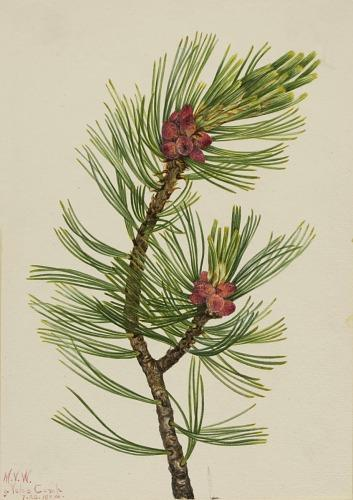 |
0.964741 |
Whitebark Pine (Pinus albicaulis) |
1924 |
lower left in watercolor: M. V. W./5 Voko Camp/7.20.1924 |
|
Western Larch |
Larix occidentalis |
269 |
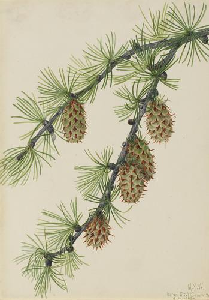 |
0.965044 |
Western Larch (Larix occidentalis) |
1923 |
lower right in watercolor: M. V. W./Horse Thief Canon 21/8.12.1923- |
|
Pink Twistedstalk |
Streptopus curvipes |
83 |
|
0.965298 |
Pink Twisted Stalk (Streptopus curvipes) |
1913 |
lower left in pencil: Glasier (sic)/1913 |
|
Longleaf Pine |
Pinus palustris |
139 |
|
0.965387 |
Longleaf Pine (Pinus palustris) |
1929 |
lower right in watercolor: M. V. W./Beaufort S.C./R D '2 (illegible)\r\nback in pencil: 139 |
| 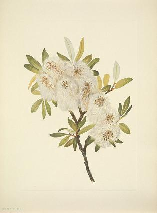 |
Drummond Willow |
Salix drummondiana |
380 |
|
0.965467 |
Drummond Willow (Salix drummondiana) |
1921 |
lower left in watercolor: M. V. W./Sheep Creek/9.18.1921./23- |
 |
Red Buckeye |
Aesculus pavia |
47 |
|
0.965507 |
Red Buckeye (Aesculus pavia) |
1918 |
lower right in pencil: Beaufort SC/3.11.1918 |
|
Mountain Hemlock |
Tsuga mertensiana (Bongard) |
267 |
|
0.965700 |
Mountain Hemlock (Tsuga mertensiana) |
1923 |
lower right in watercolor: M. V. W./Glacier/9.8.1923 .30 |
|
Prairie Thistle |
Cirsium undulatum |
309 |
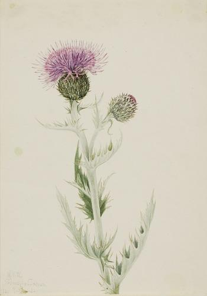 |
0.966824 |
Prairie Thistle (Cirsium undulatum) |
1923 |
lower left in watercolor: M. V. W/Sinclair Caon/11 7.5.(illegible)23. |
|
Canada Lily |
Lilium canadense |
148 |
 |
0.967399 |
Canada Lily (Lilium canadense) |
1878 |
lower center in watercolor: (illegible) M. V./7.13.1878. |
|
Engelmann Spruce |
Picea engelmannii |
378 |
|
0.969304 |
Engelmann Spruce (Picea engelmanni) |
1920 |
lower left in watercolor: M. V. W./9.1.1920./29 |
 |
Showy Ladyslipper |
Cypripedium reginae |
217 |
 |
0.969656 |
Showy Lady's Slipper (Cypripedium reginae) |
1924 |
lower right in watercolor: M. V. W./5.10.1924 |